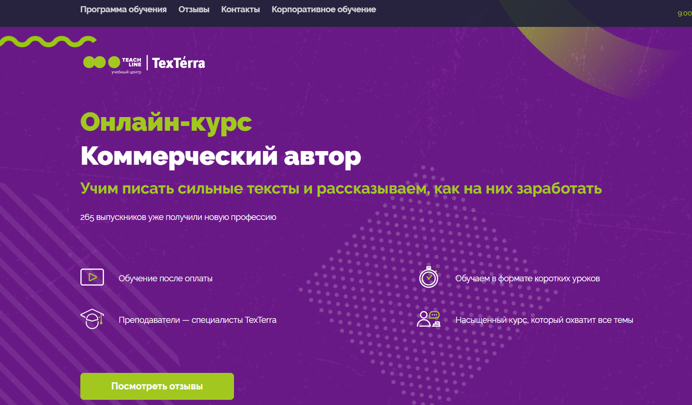
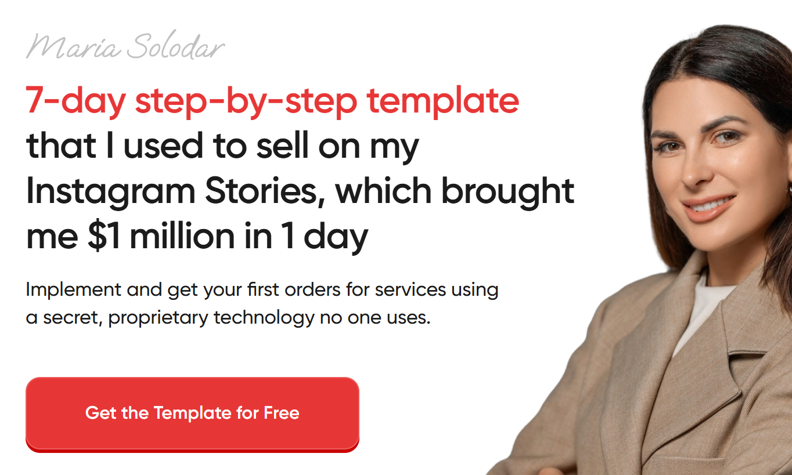
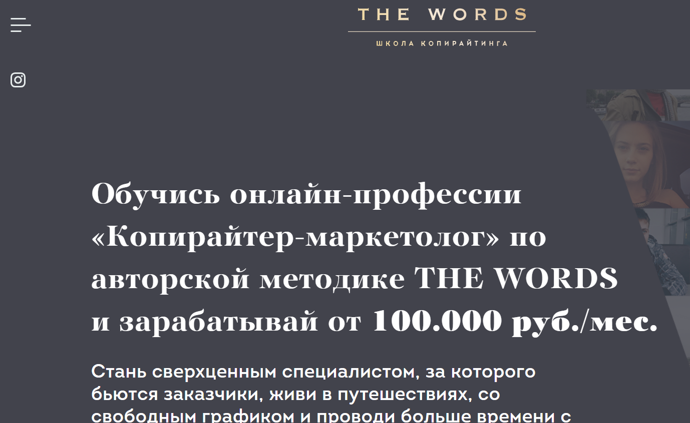
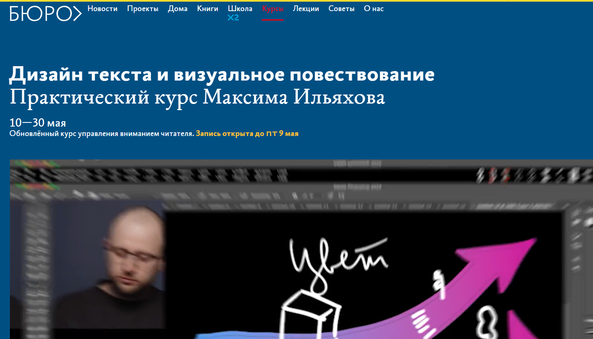

№1 Копирайтинг от А до Я — Skillbox

Сайт: https://skillbox.ru/course/copywriter/
Стоимость обучения: 2 457 р/мес (при разбивке на 12 месяцев)
Итоговая сумма: 29 484 р.
Вы получите сертификат — да Это станет подтверждением вашего успешного завершения курса и окажет положительное влияние на вашу карьеру.
Вы научитесь разрабатывать увлекательные тексты, подходящие для различных типов аудитории, а также эффективно удерживать их внимание. Обретёте навыки, позволяющие представить себя в роли специалиста и увеличивать свои финансовые поступления.
Чек-листы и образцы для написания успешных материалов
Портфолио из пяти работ
Практические задания на основе реальных брифов
Неограниченный доступ к курсу на постоянной основе
Кому этот курс будет полезен
Начинающим писателям
Вы ознакомитесь с основами копирайтинга, освоите методы создания убедительных текстов, собирания информации, структурирования контента и разработки привлекательных материалов.
Контент-маркетологам и SMM-специалистам
Вы научитесь формировать продающие тексты для социальных сетей, email-рассылок, лендингов и других рекламных каналов, что поможет расширить аудиторию вашего бренда и укрепить клиентскую лояльность.
Студентам и выпускникам гуманитарных специальностей
Вы получите практический опыт в написании коммерческих текстов и навыки решения конкретных бизнес-задач.
Желающим зарабатывать на текстах
Изучите профессию копирайтера. Вас обучат качественно писать в разных форматах, отбирать интересные проекты, предлагать свои услуги и начинать зарабатывать.
Что вы сможете освоить
Создание качественных текстов
Вы сможете работать в разнообразных стилях и форматах, дополняя свои тексты наглядными примерами.
Работа с брифами
Освоите методики быстрого анализа заданий и эффективного взаимодействия с клиентами.
Письмо для целевой аудитории
Вы научитесь разбираться в потребностях читателей и создавать контент, который будет им интересен и полезен.
Редактирование собственных и чужих текстов
Вы узнаете, как избавиться от канцеляризмов и убрать лишнее, а также освоите техники, которые сделают тексты более увлекательными.
Презентация своих работ
Вы научитесь адекватно реагировать на правки и споры, а также находить общий язык с клиентами.
Создание портфолио
Вы поймёте, как выбрать лучшие работы для портфолио, обосновать стоимость и успешно себя презентовать перед заказчиками.
Программа курса
Вас ждёт интересная система вебинаров и практических заданий, основанных на реальных примерах.
8 тематических модулей
41 онлайн-урок
Основы профессии
Типы текстов – статьи
Типы текстов – карточки
Типы текстов – email-рассылки
Другие форматы текстов
Что делает текст убедительным
Методы работы с клиентом и организация труда
Личный брендинг
Заключительный проект: создание текстового контента по брифу заказчика
Спикеры
Сергей Король
Контент-директор компании Яндекс
Людмила Сарычева
Руководитель редакторского бюро «Гладлакс», редактор и автор книг по текстам
Полина Накрайникова
Редактор роста в проекте «Горящая изба»
№2 Факультет редактуры и копирайтинга в Geekbrains

Наличие диплома о профессиональной переподготовке — да
Государственная образовательная лицензия — есть
Стоимость: от 2 907 руб. в месяц с возможностью рассрочки до 36 месяцев
ФОРМАТЫ ОБУЧЕНИЯ:
Занятия в группах с наставником
Онлайн-лекции и вебинары
Видеоматериалы с учебными занятиями
ДЛИТЕЛЬНОСТЬ — 12 месяцев (по 2 занятия в неделю)
РЕЗУЛЬТАТ — Диплом
4 работы в портфолио
ГАРАНТИЯ — Трудоустройство по окончании обучения
Кому подойдёт курс
Копирайтерам
Вы узнаете, как создавать тексты, которые наглядно демонстрируют клиентам, как ваш продукт решает их проблемы. Освоите навыки доступного и эффективного объяснения.
Тем, кто хочет изменить профессию
Станьте специалистом в своей области, научитесь разрабатывать информационные материалы и сформируйте портфолио для начала карьеры.
SMM-менеджерам и email-маркетологам
Расширьте свои возможности, познайте искусство работы с текстами на уровне редактора, увеличивайте конверсии и повышайте свою продуктивность.
Учебная программа
1
Подготовительный этап: выбор профессии
Создание текстов
Работа с данными
Редактирование
Введение в профессию
2
Юридические аспекты
Создание текстов для интернета
Этика медиапейза
Правовые аспекты
Основы авторского права
Как защитить свои права: редакторы и граждане
Риски, связанные с контентом: темы, которые могут быть опасными
Юридические нюансы редактуры в разных медиах
3
Разработка контент-стратегии
Основы верстки
Создание цифровых проектов
Аналитика
Разработка контент-стратегии
Что такое контент-стратегия
Каналы дистрибуции контента
Редакционная политика
Преобразование в реальность
4
Работа в команде
Взаимодействие с клиентами
Личный опыт фриланса
Командная деятельность
Роли в команде
Распределение задач в команде
Основные инструменты проектной работы
Поиск подрядчиков
Процесс найма сотрудников
Как контролировать выполнение работы: оценка, обратная связь, оплата, документация, рекомендации
Бюджет
Наши эксперты
Павел Федоров — Продакшен-директор КБ «Палиндром»
Создатель Telegram-канала «Паша и его прокрастинация», автор подкастов «Поредачим» и «Что-то горит». Работал над спецпроектами в «Лайфхакере», занимался маркетингом в «ВКонтакте», управлял контентом на Profi.ru, редактировал в «Нетологии».
Татьяна Симакова — Главный редактор сайта The Village
Основательница медиа «Большая деревня», вела авторские колонки для Wonderzine, Colta.ru, OpenSpace и «Афиша Daily».
Вы освоите навыки написания текстов для самых разных целей и целевых аудиторий. Создавайте заметные рекламные материалы, которые невозможно не заметить.
№3 Коммерческий редактор/копирайтер — Нетология

Сайт: https://netology.ru/programs/kontent-menedjer-edpro#/presentation
Формат обучения: видеоуроки, вебинары, тесты, практические занятия и выпускная работа
Редактор контента играет ключевую роль в достижении бизнес-целей через тексты. Он отвечает за выбор форматов материалов, создание команды, разработку контент-стратегии и её оценку.
Работа коммерческого редактора включает в себя гораздо больше, чем просто редактирование. Это требует понимания задач и способности управлять процессами.
Для кого предназначен курс
Журналисты, копирайтеры и начинающие редакторы
Погружаясь в цифровые форматы, вы откроете для себя новые горизонты и сможете работать с контентом для компаний.
Маркетологи, PR- и SMM-специалисты
Вы овладеете навыками продвижения бренда с помощью контента и наладите сотрудничество с редакцией.
Те, кто хочет сменить профессию
Вы получите умения работы с разнообразными форматами контента, сможете разрабатывать стратегии и управлять редакционной командой.
Чему вы научитесь
Создавать тексты, решающие бизнес-задачи
Включает написание статей для корпоративных блогов, контента для социальных сетей и email-рассылок.
Верстать тексты и лендинги
Научитесь использовать платформы, такие как Tilda, Readymag, Setka и WordPress для создания полноценной информации.
Применять техники сторителлинга
Выбор иллюстраций с учётом типографики и соблюдения текстовой эстетики.
Выстраивать редакционные процессы
Планирование действий команды, создание редакционных стандартов и контент-планов, установка ключевых показателей.
Организовывать распространение контента
Определение каналов для продвижения, расчёт бюджета для дистрибуции и составление медиаплана.
Работать с аналитическими данными
Мониторинг показателей с помощью веб-аналитики для оценки эффективности контента и маркетинговых стратегий.
Выпускной проект
Вы разрабатываете контент-стратегию или бизнес-план с концепцией специального проекта на основе реальной задачи. В случае отсутствия своей идеи, вам будет предложено учебное задание.
Возможности обучения
Коммерческий редактор — с основ:
Для желающих начать карьеру.
8,5 месяцев.
330 часов.
52 лекции по 1,5 часа.
27 домашних заданий с проверкой.
Содержание программы
Работа с текстами.
Упаковка контента.
Специализация: основы контент-маркетинга.
Вы научитесь писать для социальных сетей, создавать лендинги, вести корпоративные блоги и разрабатывать email-рассылки. Освоите работу с Readymag и изучите структуру и методики верстки лендингов. Также узнаете, как организовать командную работу и построить контент-стратегию.
Рассрочка: 3 785 р / месяц в течение 18 месяцев
Общая стоимость: 68 140 р
Коммерческий редактор PRO
Для профессионалов, желающих стать редакторами
7 месяцев.
309 или 262 часа в зависимости от специализации.
42 или 48 лекций по 1,5 часа.
18 или 12 домашних заданий с проверкой.
Содержание программы
Упаковка контента.
Сторителлинг.
Выбор специализации: основы контент-маркетинга или создание специализированных проектов.
Вы познакомитесь с различными форматами контента и научитесь оценивать их эффективность. Освоите платформы Tilda, Readymag, Setka и WordPress. Узнаете, как эффективно работать в команде и монетизировать свои проекты.
Рассрочка: 3 326 р / месяц на 18 месяцев
Итоговая сумма: 59 880 р.
Образовательная программа
Основной курс
Создание маркетинговых текстов
Редактура и упаковка материалов
Сторителлинг
Полный пакет «Коммерческий редактор PRO»
Направления
Контент-стратег
Разработка специализированных проектов
Коммерческий автор от TexTerra

Сайт: https://teachline.ru/courses/commercial-author/
Стоимость: 12000-26000 р.
Продолжительность: 14 видеоуроков по 1,5 часа
По завершении вы получите диплом и рекомендательное письмо, что облегчит поиск клиентов.
Курс позволит вам:
Быстро адаптироваться в новой профессии, получать заказы и зарабатывать через интернет из любой точки мира. Повысить стоимость своих услуг, развиваясь от биржевого копирайтера до профессионала в среднем и высоком сегментах. Научиться создавать тексты для бизнеса, если вы заняты маркетингом, но не умеете составлять анонсы, рекламные тексты, кейсы и статьи – курс поможет вам обрести эти навыки.
Что вас ожидает?
14 видеоуроков по 1,5 часа. Обратная связь по выполненным заданиям и возможность задать вопросы преподавателю. Знания и навыки по созданию разнообразных текстов — от статей до лендингов. Базовые знания SEO и интернет-маркетинга. Компетенции для профессиональной корректуры и редактуры. Инструменты для поиска клиентов, включая менее известные. Доступ к дополнительным материалам и записям лекций в течение года.
Программа курса
Основы копирайтинга. Изучение задач и особенностей копирайтинга в контент-маркетинге. Определение обязанностей копирайтера и возможностей для карьерного роста. Обсуждение этического кодекса.
Типы текстового контента и особенности его создания. Какой контент считается актуальным и полезным. Основные типы контента и их разработка. Текст для лендингов. Специфика содержания и структура текста, включая блоки и формы обратной связи. Почему текст лендинга является значимым прототипом.
Форматы контента, интеграция нестандартных элементов, такие как инфографика, видео, тесты, white paper. Понимание ньюсджекинга и его преимущества. Определение наиболее вирусных видов контента и способы оценки вовлеченности. Что важно в B2C и B2B контенте.
Исследование источников. Подбор темы, оптимизация контента, сбор информации и проверка её достоверности (фактчекинг). Написание глубоких статей по темам, где вы не являетесь экспертом.
Структура и оформление текста. Различие восприятия печатного и онлайн-контента. Роль структуры в восприятии. Основы HTML для коммерческих авторов. Оформление публикаций.
Примеры удачного и неудачного оформления. Стилистика. Как базовые стилистические навыки помогают создавать интересные тексты. Как аудитория реагирует на текст в разных стилях.
Журналистика в коммерческом писательстве. Сравнение коммерческого автора и журналиста. Критерии, по которым можно оценить компетенции журналиста. Форматы контента в журналистике. Применение креативного письма.
Упражнения для развития письменного навыка различными методами: утренние страницы, фрирайтинг и другие. Текстовый контент для социальных сетей: посты и рекламные объявления.
Общая концепция контента в соцсетях: её цель и применение. Как разработать рубрикатор и план контента. Форматы контента для разных социальных платформ.
Редактура и корректура. Как проводить вычитку и редактирование без искажения текста. Основные правила редактирования и задачи, на которые следует обращать внимание.
Основы SEO. Как привлекать трафик через поисковые системы. Для чего необходима оптимизация текста.
Поиск клиентов и реализация услуг. Как грамотно заявить о себе и развивать личный бренд. Как создать портфолио и составить коммерческое предложение. Анализ ошибок, ответы на вопросы и практические рекомендации для завершения курса.
Копирайтер для экспертов и онлайн-школ — Ольга Придейная

Сайт: https://prideina-course.ru/
Стоимость:
Самостоятельный — 22500 р
Базовый — 29500 р
“Хочу максимум!” — 45500 р
Кому будет полезен этот курс
Для тех, кто:
мечтает о карьере копирайтера и предпочтёт удалённую работу,
любит писать и думает о превращении этого увлечения в профессию,
стремится без труда находить работу даже в сложные времена,
уже пишет тексты на заказ в Instagram и хочет расширить свои услуги,
желает получить не только теоретические знания, но и множество практических навыков,
намеривается научиться создавать высокооплачиваемые тексты.
Курс подходит
Энтузиастам копирайтинга
Вы получите навыки в написании текстов для различных форматов, таких как лендинги, email-рассылки, лид-магниты и посты в Instagram, включая как экспертные, так и коммерческие сообщения. По завершении курса у вас будет возможность создать собственное портфолио и начать работать в этой сфере.
Для уже работающих копирайтеров
Вы повысите качество контента для экспертов, улучшите свои маркетинговые навыки и «упакуете» себя, увеличив стоимость своих услуг. Вы также узнаете о важных аспектах инфобизнеса и принципах функционирования экспертов и онлайн-школ.
SMM-специалистам, контент-менеджерам и администраторам Instagram
Вы научитесь создавать убедительные месседжи, привлекающие внимание читателей с первых строк, писать с акцентом на преимущества и привлекать новую цельную аудиторию с помощью текста. Станете универсальным специалистом, что даст вам возможность получать более высокую оплату.
Формат курса
Месяц активного взаимодействия с текстами.
Обучение проходит в онлайн-формате на платформе Getcourse.
Каждую неделю вы будете принимать участие в живых вебинарах, где получите новые знания. В общей сложности 4 вебинара с ответами на ваши вопросы и разбором распространенных ошибок. Если у вас не получится присутствовать на вебинаре, доступны записи.
В каждом блоке курса вас ожидают видеоуроки и дополнительные файлы, такие как чек-листы и инструкции.
Два раза в неделю вам нужно будет выполнять домашние задания в удобное для вас время.
Вы получите подробную индивидуальную обратную связь в аудиоформате, преподаватели будут внимательны к вашим работам.
Также будет доступен групповой чат для общения, поддержки и быстрого решения вопросов.
В чате можно будет взаимодействовать с автором курса и другими участниками.
На 5-й неделе вам предоставится возможность пройти стажировку на реальных проектах (в тарифах «Базовый» и «Хочу максимум»). Это будет хороший опыт взаимодействия с клиентами и возможностью работать во время обучения.
По окончании курса вы получите доступ к чату вакансий в Telegram, специально для выпускников, что значительно упростит поиск работы.
Содержание курса
[спойлер]
Первая неделя
1-й блок: Создание убедительных коммерческих текстов. Как продавать через текст.
Как писать доступно, но при этом убедительно.
Структура текста.
Эффективные формулы для продающего текста.
Как сделать захватывающее начало, чтобы привлечь интерес читателя.
Психология покупок. Как представить продукт/услугу через призму выгод.
Призыв к действию и формулы для него.
Как преодолеть смущение в процессе написания продающих текстов.
Вторая неделя
2-й блок: Написание текстов для лендингов.
Создание лендинга для бесплатного вебинара: этапы, блоки.
Как создавать привлекательные заголовки и подзаголовки.
Какие триггеры использовать.
Составляющие текста для лендинга.
Тексты для лендингов — одна из самых востребованных ниш.
3-й блок: Тексты для email-рассылок.
Основные принципы email-рассылок.
Как правильно составить email-рассылку для эксперта, чтобы её читали до конца.
Различные виды рассылок.
Структура вебинарной рассылки: что и в каком порядке писать.
Структура письма.
Обязанности копирайтера.
Как оценить успех рассылки и повысить её эффективность.
Как избежать попадания в папку «Спам».
Третья неделя
4-й блок: Создание экспертного контента для Instagram.
Как установить доверительные отношения с подписчиками.
Основные принципы написания экспертных текстов.
Адаптация к стилю эксперта и выстраивание коммуникации.
Контентная воронка и методы вовлечения в постах и историях.
Создание контентного плана и стратегии воронки.
Типы и цели контента в Instagram.
5-й блок: Как привлечь максимально возможное количество участников на вебинар через Instagram эксперта.
Блог эксперта: методы организации привлечения к вебинару.
Классические и альтернативные форматы анонсирующих постов.
Сторителлинг: Искусство написания историй
Как привлечь внимание аудитории
Неделя 4
Блок 6: Лид-магниты.
Что такое лид-магниты?
Лид-магниты — это инструменты, помогающие привлекать потенциальных клиентов. Они позволяют копирайтерам не только привлечь внимание, но и извлечь из этого выгоду.
Разновидности лид-магнитов и их назначение
Лид-магниты бывают различных форматов, каждый из которых выполняет уникальную функцию и подходит для определенных задач.
Основные принципы создания лид-магнитов
Существует ряд правил, которые помогут разработать успешные лид-магниты.
Дополнительные уроки:
- Урок от психолога «Как преодолеть страхи начинающего копирайтера».
- Урок «Создание текстов для лендингов платного продукта».
- Урок «Управление копирайтинг-проектами: оптимизация задач».
- Урок «Планирование и управление задачами».
- Урок «Позиционирование контента для обучающих продуктов».
- Урок «Создание прототипа лендинга».
- Урок «Работа с Яндекс.Дзен».
- Урок «Написание материалов для таргетированной рекламы».
Стажировка
Доступные тарифные планы: «Базовый» и «Хочу максимум».
Неделя 5
Стажировка (тарифы «Базовый» и «Хочу максимум»).
Информация об авторе курса
Ольга Придеина
Копирайтер, филолог, разработчик образовательных программ по копирайтингу.
- 5 лет практики в сфере копирайтинга.
- Более 4,5 тысяч коммерческих текстов для различных заказчиков.
- Более 600 дипломированных выпускников школы копирайтинга, многие из которых работают с популярными блогерами.
Курс по копирайтингу

Копирайтинг — это жизненно важный навык для современного специалиста. Он может стать как дополнительным навыком, так и основным источником дохода. Школа молодого копирайтера предлагает всевозможные знания и умения, необходимые для создания коммерческих текстов. В курс включено изучение основ копирайтинга, нюансов написания текстов для различных стилей и целей, а также технических параметров и методов редактирования. Участники выполняют практические задания для развития креативного подхода и улучшения качества своих работ.
Курс включает в себя восемь онлайн-занятий с выполнением домашних заданий. Практика — это основной путь к успеху, поэтому будьте готовы к серьезной работе. По завершении каждой лекции студенты получают задания и комментарии от преподавателя, а также возможность обсудить тексты своих коллег.
Занятия проходят по будням с 10:00 до 12:00, дважды в неделю.
Курс от Ирины Голдман

Сайт: https://spacecool.ru/copywriting
Стоимость: 8 888 РУБЛЕЙ
Интенсивный курс по копирайтингу с опытным редактором журнала Cosmo и известным блогером Ириной Голдман.
Продолжительность курса — 4 недели.
7 эксклюзивных уроков продолжительностью от 1,5 до 2,5 часов: 6 записанных + 1 в формате онлайн.
6 домашних заданий с индивидуальной проверкой и отслеживанием вашего прогресса.
Курс по техническому писательству

Сайт: https://protext.su/pro/kurs/
Продолжительность курса: 72 часа.
Стоимость обучения: 19800 руб. для физических и 24900 руб. для юридических лиц.
Цель курса
Совершенствование квалификации специалистов в области подготовки технической документации и аналитических материалов в сфере IT. Форма обучения — онлайн. Вы сами выбираете дату начала и время занятий.
Что вы получите по окончании курса?
- Для новичков курс позволит разобраться в профессии технического писателя и подготовить первые проекты для портфолио.
- Вы обретете уверенность и получите множество новых знаний и впечатлений.
- Вам будет выдан сертификат от специализированной компании, что поможет сделать первый шаг в новую карьеру.
- Если вы уже имеете опыт в области технического писательства, курс поможет выявить слабые места и улучшить свои навыки.
- Не будут лишними обсуждения профессиональных проблем и новые знания, которые могут открыть для вас новые карьерные возможности.
Программа курса
[спойлер]
- Вводный модуль о профессии
- Как стать техническим писателем
- Юридические аспекты и области работы
- Типы материалов и их целевая аудитория
- Стандарты оформления документации и статей
- Стиль написания технических материалов
- Основы оформления документов
- Методика подготовки документации для программного обеспечения
- Методика создания аналитических материалов
- Разработка видеодокументации
- Создание презентаций
- Описание программного кода и схем
- Создание технических заданий и маркетинговых текстов
- Работа с документацией для перевода
- Технические переводы и их оформление
- Выбор программного обеспечения для работы
- Особенности работы технического редактора
- Документирование в соответствии со стандартами
- Итоговая практическая работа.
[/спойлер]
Курс продвинутого копирайтинга
Сайт: https://copywriterinfo.ru/
Курс требует оплаты.
Ожидаемые результаты для участников курса
[спойлер]
- Регулярные занятия письмом: переписывайте и создавайте новые тексты, что составляет основу вашего обучения.
- 49 видеоуроков, доступных для изучения в любое время с возможностью возвращения к ним при необходимости.
- Личный кабинет, в который можно войти как с планшета, так и с настольного компьютера, где содержание организовано для вашего удобства.
- После каждого занятия практические задания, способствующие развитию навыков копирайтинга.
- Ответы на ваши вопросы, задаваемые в комментариях, с гарантией обратной связи в течение 24 часов.
- Все материалы содержат практические примеры, что облегчает их усвоение.
- Неограниченный доступ к обучающим материалам курса с возможностью их использования в любое время.
- Формирование готового портфолио с рекламными текстами, написанными в ходе курса.
- Каждую неделю проводятся вебинары для обратной связи по вашим текстам и решения возникающих вопросов.
- Гибкий подход: возможность учиться самостоятельно и получать поддержку после завершения обучения.
К нашей группе можно присоединиться в любое время, даже если кто-то уже прошел курс. Здесь нет спешки – вы можете учиться в удобном для вас темпе. Каждое воскресенье мы собираемся на вебинаре, где я даю обратную связь по всем текстам, присланным студентами. Если вы пропустили встречу, приболели или уехали, не переживайте – у вас будет возможность присоединиться позже или просмотреть запись.
Авторский Курс — Надежда Сокирская

Сайт: https://sokirskaya.ru/ Длительность: 6 недель обучения Стоимость обучения: Базовый курс — 35000р Больше практики — 46000р Максимум практики — 85000р
Для кого предназначен этот курс?
Данный курс будет полезен тем, кто хочет заниматься написанием текстов на заказ, но не имеет опыта. Ваше образование или предшествующий опыт работы не имеют значения. Если вы готовы учиться и прилагать усилия, то за 6 недель вы сможете освоить необходимые навыки, начать работать с реальными заказчиками и создать свое портфолио. Он также подойдет профессионалам, которые уже работают с текстами, но недовольны своим уровнем дохода. Вы сможете оценить свои сильные и слабые стороны, проанализировать ошибки, получить новые знания и уверенность. Вы научитесь создавать контент, который способствует увеличению продаж, и станете специалистом, которого будут искать владельцы бизнеса и блогеры.
Структура курса
6 интенсивных недель обучения с новыми уроками каждый рабочий день;
12 домашних заданий;
Групповая работа в командах по 10-12 человек под руководством наставника;
Проверка всех заданий с детализированной обратной связью от куратора;
Работа с реальными заданиями от заказчиков и получение отзывов от них;
Создание актуального портфолио на платформе Tilda в ходе курса;
Поддерживающий Telegram-канал с коучем;
Система накопления баллов и призов.
Содержание курса
Вводный модуль с подробными инструкциями. Доступ сразу после оплаты;
Поиск работы. Открывается со второй недели;
Основные навыки копирайтера;
Создание текстов, способствующих росту продаж. Практика с клиентами;
Контент для соцсетей. Практика с заказчиками;
Портфолио. Подведение итогов;
Дополнительный тренажер для отработки взаимодействия с клиентами.
Автор курса
Надя Сокирская
Журналист, редактор и блогер. Имеет образование в Литературном институте, где изучала литературное творчество. Имеет более десяти лет опыта работы в СМИ: начиная с должности редактора на радиостанциях «Русская служба новостей» и «Говорит Москва», и заканчивая должностью ответственного редактора на сайте «Комсомольской правды». С 2014 по 2017 год была главным редактором Леди.Mail.Ru. Преподавала интернет-журналистику на журфаке МГУ, обучала стажеров и активно сотрудничала с авторами. Запустила блог, который за десять месяцев собрал более 100 тысяч подписчиков. Преподает в школе телевидения «Останкино ТВ».
Кураторы
Наталья Семенова
Шеф-редактор PR-службы Правительства Москвы. Ранее работала ответственным редактором на aif.ru и шеф-редактором на сайте телеканала Минобороны РФ «Звезда».
Алена Костомарова
Шеф-редактор и заместитель руководителя отдела спецпроектов в МИА «Россия сегодня». Помогает брендам развивать их имидж и решать бизнес-задачи. Ранее сотрудничала с Geo, РБК Lifestyle, Snob и другими медиа. Опыт работы с текстами составляет 14 лет.
Конструктор продающего текста от Школы копирайтинга Дениса Каплунова
Сайт: https://deniskaplunov.com/kpt/ Стоимость: Стандартный курс: 18 525 руб Премиум курс: 37 275 руб
На протяжении полутора месяцев, основываясь на более чем 70 примерах, вы освоите 100 самых эффективных методов копирайтинга и сможете повысить конверсии своих текстов минимум в три раза.
Для кого этот курс будет полезен?
Предпринимателям и владельцам бизнесов
Вы освоите навыки создания эффективных текстов, способных привлечь в 3–5 раз больше клиентов и увеличить доход.
Копирайтерам (как фрилансерам, так и штатным)
Вы сможете улучшить свои навыки, освоить новые техники и повысить продуктивность, что позволит вам заработать в 3–5 раз больше.
Экспертам и консультантам
Вы научитесь писать тексты для продвижения ваших услуг, что поможет увеличить средний чек и повысить ваш доход в 3–5 раз.
Маркетологам и менеджерам по продажам
Вы усовершенствуете свои навыки, что даст вам конкурентные преимущества и поможет повысить личные результаты в 3–5 раз.
Что вас ждет на курсе?
1,5 месяца обучения;
Более 100 техник копирайтинга;
Проверка домашних заданий;
Более 70 примеров текстов;
Гибкий график обучения;
18 видеоуроков;
Конспекты всех лекций;
Дополнительные материалы.
Содержание курса
«Заголовки»
#1
Основной вопрос, который должен быть решен заголовком.
Три ключевых функции заголовка.
Как использовать «надзаголовок» для привлечения внимания читателя.
Примеры реальных надзаголовков из продающих текстов.
20 формул для создания эффективных заголовков.
Когда и как применять подзаголовок, его три основные функции.
20 примеров сочетания «Заголовок + Подзаголовок».
В результате: вы на практике научитесь создавать запоминающиеся заголовки, которые привлекают внимание и вызывают интерес.
«Вводная часть»
#2
Причина, по которой 80% текстов не удерживают читателей.
Проверенная формула вовлечения.
Пять факторов успешной вводной части текста.
Что такое «мини-заголовки» и их роль.
7 стратегий создания мини-заголовков и 34 примера.
10 классических техник для вводной части рекламного текста.
10 креативных подходов к написанию вводной части.
В итоге: вы поймете, как правильно начать продающий текст, чтобы вызвать доверие читателя и «разогреть» его интерес к продукту или услуге.
«Представление и описание»
#3
Эффективность концепции «Тройной выгоды».
7 способов представить новизну в привычном продукте.
Двухступенчатая формула представления товара.
Уникальное торговое предложение в 10–20 слов.
5 коротких и длинных примеров представления.
14 способов описания продукта или услуги.
Теглайн как средство усиления текста + 7 примеров для вдохновения.
В результате: вы научитесь формулировать уникальное торговое предложение, подчеркивающее выгоды вашего продукта или услуги в условиях жесткой конкуренции.
«Доказательства»
#4
Зачем в тексте нужны доказательства.
Как задействовать SOCIAL PROOF и почему это важно.
Формулы успешных отзывов (с примерами).
Создание кейсов и написание вдохновляющих историй.
Доказательная сила цифр.
Инструменты для подтверждения ваших компетенций.
16 типов нестандартных доказательств и примеров.
В итоге: вы сможете приводить убедительные аргументы, которые помогут преодолеть сомнения клиента.
«Ценовое предложение»
#5
Что такое «продажа цены» и почему это важно.
Как писать, если цена не фиксирована.
Как убеждать, если цена одинакова у многих.
5 хитрых тактик работы с тарифами и пакетами.
4 типа и 9 примеров гарантий в продающих текстах.
Почему гарантия — это не только возврат денег.
15 техник аргументации цен.
В итоге: вы освоите, как правильно формулировать ценовое предложение, чтобы клиент осознал выгоду сотрудничества с вами.
«Финал продающего текста»
#6
«Ловушка классного текста» — как разрушить конверсии.
Как правильно завершать продающий текст.
Универсальная формула призыва к действию.
«Действие с минимальным сопротивлением» и как увеличить конверсии.
Зачем в продающем тексте нужно специальное предложение.
Три типа и 22 примера специальных предложений.
15 примеров успешных завершений продающих текстов.
В итоге
вы научитесь, как правильно завершать продающий текст, чтобы превратить читателя в клиента, готового к взаимодействию сразу после прочтения.
Как осуществляется процесс обучения?
Старт
Вы получаете доступ к онлайн-платформе с учебными материалами курса.
Уроки
Вы последовательно изучаете видеолекции каждого модуля (теоретическая часть и практические примеры).
Практика
Выполняете домашние задания и отправляете их для проверки.
Проверка
Тренер анализирует ваше задание и предоставляет рекомендации для улучшения.
Консалтинг
Вы можете получить две дополнительные консультации от Дениса Каплунова (в пакете «Премиум»).
Кто автор курса?
Денис Каплунов
Известная личность в сфере копирайтинга, контент-маркетинга и продвижения. Заработал блестящую репутацию благодаря профессиональному подходу к текстовой работе. Более 12 лет опыта в разработке коммерческого контента. Более 4000 успешных проектов для 700+ клиентов. Имеет преимущественный опыт в работе более чем в 100 уникальных отраслях. Основатель агентства «Студия Дениса Каплунова».
Что вас ожидает в курсе
Бонус 1 — Мини-курс «Копирайтинг XXI века»
Бонус 2 — Комплект из 10 чек-листов
Бонус 3 — Мастер-класс «SOLD OUT»
Бонус 4 — Мастер-класс «Клиенты из соцсетей»
Бонус 5 — Мастер-класс «15 упражнений по копирайтингу»
Бонус 6 — Мастер-класс «Коммерческое предложение на 1 страницу»
Бонус 7 — Мастер-класс «Переписка с клиентами»
Курс «Базовый курс Главреда» от Максима Ильяхова

Курс был обновлён за шесть лет несколько раз, включая новые темы и переработку устаревших. В конце 2019 года совместно со Станиславом Миляевым была создана видеоверсия: основные знания о создании качественного текста представлены в 13 видео. Мы переосмыслили предыдущие материалы и добавили новые темы:
- Использование Главреда
- Определение информационного стиля
- Стоп-слова
- Вводные конструкции
- Оценочные слова и усилители
- Штампы
- Заумь
- Синтаксис
- Канцеляризмы
- Кинематографические приемы
- Уточняющие конструкции
- Однородные члены предложения
- Ясность текста
- Коммуникация
- Практическое применение текста
- Контекст
- Следующие шаги
Углубленный 2-месячный курс ИНТЕРНЕТ-ПРОФЕССИЯ КОПИРАЙТЕР 2.0 от Натальи Реген
Сайт: https://infovoronka.ru/ipk2-0-price-special
Цена:
Пакет Базовый — 13990р
Пакет Стандарт — 20990р
Пакет Премиум — 40990р
Содержание курса
Модуль 0
Подготовительный
На данном этапе обучения вы познакомитесь с общей структурой курса и его процессом. Мы изучим основные принципы маркетинга, необходимые для работы копирайтером. Получите знания о профессии копирайтера и формулу «Т» для практического применения. Также получите рекомендации о том, как найти первого клиента для стажировки, что станет вашим первым шагом к практическому опыту.
Модуль 1
Статьи и тексты для сайтов
Вы научитесь различным разновидностям и форматам текстов. Просмотрите примеры различных статей и выполните практические задания по написанию своих первых текстов для портфолио. Изучите, как писать тексты для таких страниц, как главная, категории, услуги и о компании, а также освоите навык построения структуры текста на практике.
Модуль 2
Продающие тексты
Вы получите знания о типах и форматах продающих текстов. Получите рабочую тетрадь с полезными формами и структурами, которые помогут вам экономить время. Подробно ознакомитесь с формулами, наиболее актуальными для клиентов, и выполните задание по созданию продающего текста для своего портфолио.
Модуль 3
Социальные сети
Вы научитесь создавать истории, разрабатывать контент-планы для клиентов и писать тексты для соцсетей. Узнаете о контентных публикациях, прогревающих цепочках для аудитории, а также научитесь составлять рекламные и продающие посты.
Модуль 4
Рассылки, чат-боты и автоворонки
Изучите стратегии написания рассылок с реальными примерами и шаблонами. Получите алгоритм для создания пяти видов писем. Освойте технологию разработки автоворон и чат-ботов: цены начинаются от 15 000 руб.
Модуль 5
Упаковка и самопрезентация
Научитесь формировать бриф с деталями работы с заказчиком. Узнайте, как оформлять портфолио и описывать свои кейсы. Рассмотрите, как создать свою профессиональную страницу, группу или сайт для развития личного бренда.
Модуль 6
Клиенты и получение заказов
Узнайте, где искать платёжеспособных клиентов. Овладейте тремя действующими методами для установления долгосрочных отношений с клиентами. Научитесь ведению переговоров и уверенно реагировать на любые возражения. В рамках этого модуля представляем лучшие платформы для поиска клиентов и готовые шаблоны для обращения к заказчику, чтобы повысить ваши шансы на успешный выбор.
Модуль 7
Выбор специализации для увеличения дохода
Определите, какую специализацию выбрать. Изучите основы различных направлений копирайтинга: автоворонки, услуги, контент-маркетинг, интернет-магазины, онлайн-школы.
Модуль 8
Комплексные предложения для клиентов
Узнайте, как предлагать клиентам повторные услуги для увеличения дохода от одного проекта. Получите пошаговые указания, как сделать правильное предложение комплексной услуги. Подготовьте систему для получения заказов на суммы свыше 10 000 рублей за проект.
Финал
Аттестация для получения сертификата.
План дальнейшего профессионального роста: как развиваться в профессии.
Ваша индивидуальная система увеличения доходов.
Формат обучения
Уроки проводятся на образовательной платформе.
Регулярные обновления.
Вебинары с ответами на ваши вопросы.
Поддержка куратора.
Удалённая профессия Копирайтер — Артур Грант и Вероника Головченко / Profi Internet
Сайт: https://copywriting.artur-grant.ru/
Длительность: 2 недели
Формат: онлайн
Цена: бесплатно
ЧТО ВЫ ПОЛУЧИТЕ?
Бесплатно пройдите двухнедельный курс по копирайтингу. Начните зарабатывать удаленно, создавая тексты под заказ.
АВТОРЫ КУРСА
Артур Грант – соавтор курса и основатель школы Profi-Internet. Копирайтер с семилетним опытом, который за первый год поднялся с очень низкого ценового уровня (2-3 доллара за текст) до 200-400 долларов. Тексты, созданные Артуром для своих проектов, принесли более 28 миллионов рублей за последние три года.
Вероника Головченко – активный тренер с более чем семилетним опытом копирайтинга, которая обучила более 1000 человек на курсах и в индивидуальном коучинге.
Специалист по копирайтингу
Сайт: https://copy2.0.profiinet.ru/
Длительность: 3-месячный онлайн-курс
По завершении обучения вы получите сертификат.
Цена:
Пакет «СТАНДАРТ» — 9 900 руб/мес
Пакет «VIP» — 15 900 руб/мес
Что даст курс?
- Вы приобретете сертификат специалиста.
- Будете готовы работать как эксперт с полным портфолио и личным сайтом.
- Освоите все нюансы работы и сможете принимать сложные заказы (включая продающиеся тексты) от 5000 рублей.
- Смело найдете дорогих клиентов и сможете запустить «сарафанное радио», чтобы получить обращения от клиентов самостоятельно.
- Избавитесь от страхов и сомнений, обретете уверенность в своих силах.
- Достигнете поставленных целей (финансовая независимость, свобода, продвижение на новую работу).
Программа курса
модуль 01
4 недели
Мастер статей
• Основные инструменты для копирайтинга
• Различия между LSI и SEO-копирайтингом
• Характеристики создания SEO-текстов для страниц интернет-магазина
• Верстка текста
• Понятия: сниппет, хлебные крошки, метатеги
• Дизайн текста
• Создание контента для социальных сетей
• Алгоритм, который позволит быстро и с удовольствием выполнять задания.
модуль 02
1 неделя
Поиск первых клиентов на биржах
• Особенности выбора биржи для копирайтинга
• Как грамотно заполнить профиль, чтобы клиенты вас выбирали
• Как написать отклик и начать зарабатывать.
модуль 03
4 недели
Создание эффективного портфолио
• Формирование мощного портфолио с нуля
• Как определить стоимость своих услуг?
• Поиск вашей уникальности (УТП)
• Первые клиенты вне бирж: где их искать и как установить связь.
модуль 04
4 недели
Мастер продающих текстов
• Разработка брифа
• Анализ целевой аудитории, конкурентов и продукта
• Эффективные формулы «дорогого» копирайтинга
• Пошаговые алгоритмы для создания продающих текстов.
• Сторителлинг
• Создание лендингов
• Email-рассылки
модуль 05
1 неделя
Поиск высокооплачиваемых заказчиков
• Разработка кейсов
• 11 методов поиска клиентов от Артура Гранта
• Активные и пассивные способы
• Поиск в онлайн и оффлайн режиме
• Стратегическое партнерство
модуль 06
1 неделя
Профессиональная упаковка услуг
• Создание «ауры-экспертности»
• Определение специализации
• Нейминг
• Создание собственного сайта
Авторы курса
Артур Грант
• Соавтор курса, копирайтер и маркетолог, основатель школы Profi-Internet.
• С первых шагов карьеры за один год поднялся с низкого ценового уровня (2-3 доллара за текст) до 200-400 долларов.
• Тексты Артура принесли его проектам более 140 миллионов рублей за последние 5 лет.
Вероника Головченко
• Соавтор курса, опытный тренер с более чем 8-летним стажем в копирайтинге.
• Обучила более 1200 человек, ставших успешными копирайтерами и зарабатывающими с удовольствием.
• Создала текстов на сумму более 7 миллионов рублей.
Кому стоит обратить внимание на курс?
Новичкам:
Овладейте одним из самых востребованных навыков 2019-2020 года. Работайте из любого места с гибким графиком и стабильным доходом.
Начинающим копирайтерам:
Станьте признанными профессионалами своей области, увеличивайте доходы и создавайте поток заказов.
Специалистам по SMM, экспертам в SEO, дизайнерам, маркетологам:
Предлагайте своим клиентам разнообразные пакеты услуг, увеличивайте свои возможности и поднимайте стоимость своих предложений.
Для действующих или будущих владельцев бизнеса:
Сэкономьте значительные средства, отказавшись от услуг недобросовестных подрядчиков, и выбирайте проверенных специалистов.
Школа копирайтинга — Мария Солодар

Сайт: https://solodar.com/copywriting-school/
Длительность: программа обучения на 2 месяца.
По завершении курса вы получите сертификат.
Стоимость участия — 59 900 РУБ.
Кому будет полезен этот курс?
Тем, кто ищет работу:
Если вы хотите зарабатывать более 100 000 рублей, работая из любой точки мира, и стремитесь к финансовой независимости.
Предпринимателям:
Если вы желаете развивать новые бизнес-направления с высокой прибыльностью.
Маркетологам:
Если вы намерены расширить свои услуги и через текстовое воздействие влиять на поведение клиентов.
Новичкам:
Если вы никогда не писали текстов, но стремитесь зарабатывать на создании контента.
Что вы освоите?
Научитесь создавать мощные письма, разрабатывать лендинги, маркетинговые материалы и другие текстовые форматы с лёгкостью. Вы будете писать для социальных медиа, активно развивая свой блог и увеличивая продажи за счёт расширения охвата. Овладеете мастерством написания текстов, которые побуждают к немедленному приобретению товара. Кроме того:
Вы научитесь повышать финансовые показатели своего проекта, полагаясь исключительно на качественные тексты. Вам откроются психологические техники, которые помогут убедить даже самых скептически настроенных клиентов. Также вы освоите подходы к выстраиванию долгосрочных отношений с клиентами, что позволит стабильно зарабатывать от 100 000 рублей в месяц.
Структура курса
**МОДУЛЬ 1**
Вводный модуль: знакомство с основами профессии и организационными нюансами.
Договор-оферта.
Кто такой копирайтер? Знания о профессии и подготовка к её особенностям.
Как ориентироваться в личном кабинете и сдавать домашние задания.
Работа с брифом — ключевой шаг в написании любого успешного текста.
Дополнительные материалы:
Шаблон брифа для копирайтера.
Результаты модуля:
Вы изучили основные термины и концепции копирайтинга.
Определили проект для стажировки.
Поняли, как использовать обучающую платформу.
Научились работать с брифом.
**МОДУЛЬ 2**
Психология копирайтинга.
Основы создания качественных текстов.
Как оказать влияние на читателя: ключевые триггеры для копирайтера.
Сторителлинг: способ создания привлекательных историй.
Дополнительные материалы:
Психология влияния в продажах и бизнесе.
30 нужных ментальных триггеров с примерами.
Инструкция по формированию профиля целевой аудитории.
Инструкция по созданию аватара.
Примеры проблем целевой аудитории.
Результаты модуля:
Вы освоили основные аспекты копирайтинга.
Научились корректно использовать триггеры.
Создали профиль целевой аудитории и аватара.
Написали продающую историю для своего проекта.
**МОДУЛЬ 3**
Создание содержательных текстов и формулировка сильного предложения.
Уникальное торговое предложение и эффективный оффер.
Как привлечь интерес рекламным заголовком.
Дополнительные материалы:
УТП на базе декларируемых ценностей.
Офферы и их примеры.
Формула специального предложения.
Примеры офферов по специальной методике.
Результаты модуля:
Сформулируете декларацию ценностей для своего проекта.
Создадите убедительный оффер согласно формуле.
Разработаете рекламные заголовки.
**МОДУЛЬ 4**
Проектирование лендингов и создание коммерческого предложения.
Как делать посадочные страницы с высокой конверсией.
Коммерческое предложение и маркетинговый пакет.
Дополнительные материалы:
Обзор платформы mottor.
Пример разработки лендинга на Tilda.
Элементы лендинга: оффер, дескриптор, призыв к действию.
Инструкция по созданию посадочной страницы.
Шаблон для проектирования подписной страницы.
Пример прототипа для продающей страницы в Google Docs.
Коммерческое предложение и маркетинговый пакет.
Схема «21 вопрос для упаковки» по методике Лебедева.
21 вопрос для упаковки.
117 вопросов для упаковки.
Результаты модуля:
Научитесь с нуля проектировать страницу в конструкторе.
Создадите коммерческое предложение для своего проекта.
Научитесь разрабатывать презентацию для коммерческого предложения.
Представите свой маркетинговый пакет как копирайтер.
**МОДУЛЬ 5**
Основы email-маркетинга и написание электронных писем.
Как создать рассылку, которая будет открываться.
Email-маркетинг как многофункциональный инструмент продвижения.
Правила написания продающих писем.
Создание заинтересовывающего и продающего контента для соцсетей.
Технические аспекты настройки авторассылки через GetResponse.
Дополнительные материалы:
Мастер-класс «Цепочка взаимодействий».
Инструкция по написанию писем для почтовых стратегий.
Инструкция по созданию воронки продаж.
Примеры стратегий email-маркетинга.
Видеоинструкция по работе с программой Xmind.
Чек-лист по написанию и оформлению писем.
Чек-лист по созданию и оптимизации серии писем.
Примеры электронных писем.
Эффективный email-маркетинг (занятие от GetResponse).
Результаты модуля:
Научитесь создавать письма с показателями открываемости.
Разработаете email-стратегию для своего проекта.
Напишете серию писем, включая продающие.
**МОДУЛЬ 6**
Копирайтинг для соцсетей и мессенджеров.
Создание контента для Instagram: описание профиля, контентные и рекламные посты.
Оформление страниц и привлечение внимания в Facebook.
Создание увлекательного и продающего контента для социальных медиа.
Копирайтинг для мессенджеров.
БОНУС: Психология продаж в социальных сетях.
Дополнительные материалы:
Гид «Принципы написания постов».
Пример оформления профиля.
Плюсы и минусы Facebook.
Примеры вовлекающих и стимулирующих постов.
5 распространенных ошибок при написании постов.
Сторителлинг.
Структура успешной истории.
Инструкция по составлению историй.
Примеры историй.
7 критериев для рассылок в мессенджерах.
Результаты модуля:
Оформите свои страницы в Instagram и Facebook.
Поймете, каковы успешные страницы в соцсетях и почему.
Создадите серию привлекательных постов.
Научитесь отличиям в контенте для мессенджеров.
Используете различные виды контента в мессенджерах.
Составите сообщение для мессенджера.
**МОДУЛЬ 7**
Копирайтинг для видео.
Создание продающего видеоконтента.
Разработка сценария «Запуска по Волкеру».
Дополнительные материалы:
Пример сценария для продающего видео.
Пример продающего видео курса по эротическим танцам.
Скрипт для One Time Offer (OТO).
Скрипт для создания продающего видео.
Пример ОТО.
Как подготовить презентацию для продающего вебинара или выступления.
Шаблон продающей презентации на Google-презентациях.
Результаты модуля:
Создадите сценарий продающего видео для вашего продукта.
Научитесь проводить успешные запуски и разработайте сценарий для видео.
Сформируете структуру презентации для вашего проекта.
**МОДУЛЬ 8**
Завершающий проект.
Финальный проект.
Получение сертификата.
Ваш БОНУС за отзыв о Школе копирайтеров.
Результаты модуля:
У вас будет реальный кейс с готовыми шаблонами и алгоритмами для написания любых текстов.
После успешной защиты финального проекта получите сертификат.
**БОНУСНЫЙ БЛОК**
Где и как находить клиентов, что нужно новичку и как увеличить стоимость своих услуг.
Сколько стоит работа копирайтера: какие суммы озвучивать клиенту?
Как устроиться удалённо в желаемую компанию: от резюме до онлайн-собеседования.
Как уплачивать налоги, если вы работаете на себя или как фрилансер.
СПИКЕРЫ
Мария Солодар
Эксперт в цифровых технологиях, онлайн-продюсер, предприниматель.
Олег Баша
Генеральный директор в GetResponse Россия, профессионал в области email-маркетинга.
Информационный стиль и редактура текста от Бюро Горбунова

Структура курса
**Первый день: слова**
Стиль написания и его информативное содержание.
Принципы редактирования текстов.
Использование стоп-слов.
Практическое задание: определение стоп-слов.
Достоверность текста и выбор фактов.
Практическое задание: работа с фактами.
Ошибки разных уровней писателей.
Практическое задание: повышение информативности через редактирование.
**Второй день: предложение, абзац и текст**
Емкость и структура предложений.
Энергетика синтаксиса.
Знаки препинания.
Практическое задание: редактирование предложений.
Логичность построения абзацев и практическое применение правила капрала.
Практическое задание: редактирование абзацев.
Заголовки и подзаголовки.
Структурирование мыслей.
Практическое задание: создание основного каркаса статьи.
Ритм написания и методы дидактики.
Практическое задание: написание статьи.
**Третий день: информационный продукт**
Работа с успешным текстом и его структура.
Честность и манипуляция.
Настройка под читательскую аудиторию.
Иллюстрации и их влияние на текст.
Практическое задание: выбор иллюстративного материала.
Усовершенствование элементарных предложений.
Коммуникационный стиль.
Практическое задание: публичное заявление
Правила акцентов и управления вниманием
Практическое задание: параллельное изложение
Анатомия информационной статьи
Практическое задание: подготовка статьи к публикации
День четвертый: реклама
Принцип полезности
Реклама, которую хочется распространять
Создание заголовка для рекламы
Структура страницы с продажами
Личное восприятие и эмоции в рекламных материалах
Этические и неэтические методы
Способы работы с возражениями
Отзывы и построение текстов
Сравнение длинных и коротких страниц
Как составить текст для страницы продукта в интернет-магазине
Полезно для человека — полезно и для поисковых систем
Практическое задание: создание длинной страницы
Итоговый алгоритм написания текста
Маленькие секреты работы редактора
Инструменты редактирования и редакционная политика
Польза и вред текста. Когда стоит отказаться от написания
Автор и преподаватель курса
Максим Ильяхов
Главный редактор бюро с 2009 года, автор рекомендаций по созданию текстов и их редактированию, разработчик сервиса «Главред», кандидат педагогических наук.
«Инициал» от Lifehacker.Ru

Сайт: https://lifehacker.ru/special/initial/
Цена: бесплатно
Освоить качественное написание текстов не так сложно, как может показаться. Вам потребуется лишь желание, свободное время, множество практики и хороший наставник.
Мы, команда редакторов Лайфхакера, стремимся стать такими наставниками для вас. На протяжении работы над тысячами статей мы улучшали их, допускали ошибки, мучились и извлекали уроки. Теперь готовы делиться нашим опытом через рассылки.
Курс состоит из 12 сообщений, которые будут приходить на вашу электронную почту каждую неделю. Каждое сообщение будет включать теорию и множество примеров.
Вы будете знать:
– как генерировать интересные темы;
Школа копирайтинга — Ольга Соломатина
Продолжительность: 2 месяца
Стоимость: 24900 р.
Вы получите диплом установленного образца
Обучение в онлайн-школе позволяет овладеть одной из наиболее востребованных профессий, что открывает возможности для заработка из любой точки мира, даже оставаясь дома с детьми.
Программа курса в Школе копирайтинга охватывает три ключевых аспекта:
- Навыки взаимодействия с клиентами.
- Теоретические и практические основы копирайтинга и маркетинга.
- Умение эффективно позиционировать себя и находить высокооплачиваемые вакансии.
Курс
- Эффективное взаимодействие с клиентами.
В этом разделе вы получите реальные задания и возможность заработка. Практика — лучший способ обучения.
Обсудим, где и как копирайтер может найти потенциальных работодателей.
Научитесь составлять задания на текст, работая как с клиентом, так и самостоятельно.
Выясните, какие вопросы помогут выявить настоящие потребности заказчика.
Познакомьтесь с процессом согласования текстов и выявления подходящих клиентов, а также контракты, которых стоит избегать.
Овладейте стратегиями разрешения конфликтов и предотвращения их возникновения с клиентами.
Разберем, что на самом деле стоит за фразой: «Мне это не нравится».
Научитесь обсуждать правки и комментарии.
Также полезно знать, как реагировать на ситуации с задержкой сроков со стороны клиента. - Основы копирайтинга и маркетинга.
В ходе учебного процесса вы будете часто писать и редактировать свои тексты, так как это ключ к развитию навыков письма. После каждого задания я буду делать редактуру и объяснять, почему вношу те или иные коррекции.
Вы исследуете, как копирайтеры находят необходимую информацию и какие методы используются для сбора данных.
Изучите более 20 типов планов материалов и научитесь применять их на практике.
Научитесь писать в разных стилях: информационном, деловом, научном и других.
Определите различные жанры — от постов и заметок до аналитических отчетов и эссе.
Овладеете всеми 12 типами пресс-релизов.
Научитесь редактировать как свои, так и чужие тексты.
Познакомьтесь с канцеляризмами и штампами, изучите, когда их использование оправдано.
Специалисты по орфографии и пунктуации из Издательского дома «КоммерсантЪ» проведут для вас мини-лекции.
Разберем различия между копирайтингом и журналистикой.
Научитесь проводить интервью, подготовив хороший список вопросов, и освоите основы стилистики.
Маркетолог расскажет о рекламе, воронках продаж и уникальных торговых предложениях, а я дополню свои знания по продающим текстам и нативной рекламе.
Научитесь писать для компаний, составлять учебные материалы и рецензии.
Изучим методики работы с возражениями клиентов.
Вы освоите оформление текстов и страниц.
Рассмотрим основы сторителлинга и как правильно писать для различных социальных платформ.
Вы познакомитесь с приемами создания эффективных заголовков и подзаголовков.
Научитесь определять, когда лучше использовать графические материалы вместо текстовых. - Позиционирование себя и поиск высокооплачиваемой работы.
Разберем суть редакционных политик.
Научитесь формировать свое портфолио и эффективно презентовать себя.
Вы научитесь собирать отзывы и рекомендации и поймете, как редактировать тексты других людей, сохраняя при этом хорошие отношения.
Смиритесь с перфекционизмом и внутренним критиком.
Узнайте, сколько Вы стоите на рынке и что на самом деле предлагает копирайтер своим клиентам.
Поймете, как справляться со страхами, связанными с повышением цен, и как отказывать клиентам при необходимости.
Научитесь писать без перерывов и применять методы предотвращения эмоционального выгорания.
Оцените, что такое дедлайн и почему важно уметь работать под давлением.
Получите представление о различных способах зарабатывания денег в этой сфере.
Копирайтинг за 2 месяца — Мария Налобина

На курсе вы узнаете:
- Что и почему заказчики ожидают от ваших текстов и за что готовы платить.
- Способы написания качественных текстов по готовым инструкциям и их комммерциализации.
- Этапы, позволяющие заработать свои первые деньги в интернете.
Не упустите эту возможность! Курс идеально подойдет тем, кто aspired стать высокооплачиваемым копирайтером, но не знаком с деталями, а также тем, кто столкнулся с «потолком» и ищет пути для роста!
Вы познакомитесь с особенностями этой актуальной сферы и узнаете мои авторские методики!
Спикер:
Мария Налобина — предприниматель, активно развивающая бизнес в интернете последние 5 лет, создавая тексты, которые приносят более 10 млн. рублей.
Она также подробно расскажет, какие текстовые форматы сейчас наиболее прибыльные, и как без особых усилий зарабатывать от 50 тыс. рублей в месяц, выполняя 2-3 качественных заказа.
Такого вы еще не слышали! Это наши личные наработки.
Вы узнаете, где лежит секрет финансового успеха в копирайтинге и как его достичь.
Профессия Копирайтер — Дамир Халилов
Сайт: https://damir-halilov.ru/kurs_copywrite/
Продолжительность: 2 месяца
Формат: видеоуроки
Стоимость:
SILVER – 24 700 руб.
GOLD – 28 700 руб.
PLATINUM – 44 700 руб.
Рассрочка: от 2059 рублей в месяц
Кому это подойдет
Предпринимателям
Вы научитесь создавать эффективные рекламные тексты для своего бизнеса, разрабатывать прототипы сайтов, а также презентации и коммерческие предложения, что позволит повысить доход вашей компании.
Маркетологам и SMM-специалистам
Вы освоите принципы создания качественных текстов для соцсетей, email-рассылок и других маркетинговых каналов, что поможет составить контент-стратегию для вашего бизнеса.
Копирайтерам
Вы укрепите свою профессиональную репутацию, развив личный бренд, повысив свою спрос и стоимость услуг.
Тем, кто хочет освоить актуальную профессию
Вы получите в руки интересную профессию и возможность работать из любого места.
Что вы узнаете
Создадите сильные тексты
Научитесь разрабатывать материалы на различные темы в разных форматах под различные задачи.
Поймете потребности вашей аудитории
Сможете создавать контент, максимально привлекательный для ваших читателей и клиентов.
Научитесь генерировать идеи
Овладеете методами креативного мышления, что позволит легко придумывать успешные концепции.
Научитесь приносить пользу бизнесу
Поймете, как с помощью текста установить доверие к вашему бренду и привлечь новых клиентов.
Научитесь продвигать свои услуги
Узнаете, где искать заказчиков и как составить выгодные предложения.
Процесс обучения
Вы будете изучать материалы курса и закреплять полученные знания через практические задания. Для успешного завершения курса достаточно уделить 3-5 часов в неделю.
- Видеоуроки трижды в неделю.
- Рецензии домашних заданий с рекомендациями от кураторов.
- Чат для общения с кураторами и другими участниками курса.
- Четыре интерактивных занятия с Дамиром — анализируем работы студентов в режиме реального времени.
- Шаблоны и чек-листы, доступ к библиотеке видеоуроков.
- В конце курса — разработка сайта-визитки и оформление портфолио.
- Выдача сертификата от Школы и диплома государственного образца.
- После завершения обучения вы получите доступ к секретному каналу с вакансиями для выпускников.
Организация курса
- Основы копирайтинга
- Приемы копирайтинга
- Бизнес-сторителлинг
- Создание контента для соцсетей
- Тексты для веб-сайтов
- Разработка контента для e-mail рассылок
- Материалы для презентаций, рекламных брошюр и буклетов
- Статьи и публикации в медиа
- Поиск заказчиков и способы монетизации
- Расширенный курс и VIP-секция
- Упаковка текста
- Продвижение на платформе Яндекс.Дзен
- Создание персонального бренда и формирование агентства по копирайтингу
Лектор курса
Дамир Халилов
Учредитель GreenPR — первого SMM-агентства в Российской Федерации.
Автор книги-бестселлера «Маркетинг в социальных сетях», получившей Книжную премию Рунета в 2014 году в категории «Выбор читателей».
Регулярно выступает на различных мероприятиях, таких как РИФ, RIW, «Российская неделя маркетинга», Российская неделя продаж, Суровый Питерский SMM, СПИК.
Тексты на 360 — Ксения Лебедева
Сайт: https://upgrademarket.ru/textspro
Стоимость обучения: информация отсутствует
Кому будет полезно?
Тем, кто мечтает о творческой профессии
Чтобы работа приносила не только доход, но и удовлетворение.
Для начинающих копирайтеров
Чтобы быстрее перейти от низкооплачиваемых заказов по 100 рублей за 1000 знаков к более выгодным.
Для фрилансеров и удаленных сотрудников
Чтобы освоить новый навык и повысить свои расценки на услуги.
Содержание курса
1
Базовый курс
- Основы текстового творчества
- Ваши сильные стороны как автора
- Классификация текстов
- Частые ошибки копирайтеров
- Рекомендованная литература для писателей
Итог: вы научитесь говорить на языке копирайтинга, определите дальнейшие шаги и разработаете конкретный план действий.
2
Журналистика
- Ключевые принципы написания текстов
- Источники информации
- Разнообразие форматов текстов
- Правила написания статей
- Характеристики контента для корпоративных блогов, интервью и дайджестов
- Как создать привлекательный заголовок
- Советы успешного автора
- Поиск работы:
- Написание сопроводительного письма
- Как обсуждать нехватку опыта
- Составление резюме
- Поиск вакансий
Итог: вы углубите свои знания в журналистике и научитесь писать для масс-медиа.
3
Продающие тексты
- Особенности продающего копирайтинга
- Структуры текстов, направленных на продажу
- Определение и решение проблем клиентов
- Эмоциональные триггеры
- Как предложить помощь вместо навязывания товаров
- Контент для информационного бизнеса
- Создание эффективных продающих писем
Итог: вы научитесь избегать навязчивых продаж и начнете принимать во внимание потребности клиента.
4
Тексты для блога
- Ключевые аспекты блочных текстов
- Эффективное планирование контента
- Методы привлечения аудитории
- Как работать с хайпом, даже если вы в этом не опытны
- Кликбейт: когда и как его применять
- Сторителлинг для удержания читателей
- Создание материалов, способствующих продажам
Итог: вы получите все нужные инструменты для ведения личного блога или для работы с блогами других.
5
Заработок
- Методы монетизации ваших навыков
- Фриланс: с чего начать и как развиваться
- Поиск клиентов: фриланс-платформы
- Шаблон заявки на бирже
- Бриф для клиентов
- Способы увеличения расценок
- Оптимизация бизнес-процессов и делегирование
Итог: выстроите систему заработка на своих знаниях и научитесь повышать свои расценки.
6
SEO-тексты
- Основные аспекты SEO-копирайтинга
- Как поисковые системы воспринимают и анализируют текст
- В чем разница между копирайтом и рерайтом?
- Смысловая структура сайта
- Интерпретация технического задания
- Структура сниппета (внешние заголовки страниц)
Итог: вы узнайте, как продвигать сайты с помощью текстовых материалов и как эффективно координировать работу с SEO-специалистами.
7
Психология денежного успеха
- Обоснованный подход к целеполаганию
- Психологические преграды на пути к финансовому успеху
- Способы преодоления страха перед деньгами
Итог: вы избавитесь от внутренних барьеров, препятствующих достижению финансового благополучия.
Преподаватели курса
Ксюша Лебедева
Специалист по созданию продающих текстов для сайтов и ведению коммерческих и личных аккаунтов. Имеет опыт работы в журналистике в областях fashion и travel, зарабатывая более 100 тысяч рублей в месяц, и знает, как продать один пост за 3 500 рублей.
Маргарита Взнуздаева
Автор статей для VC.ru, Habr, Diletant Media, а также для проекта «Своё дело» от Сбербанка, Пятницы и «Райффайзенбанк Медиа», а также Digger. Обладает широкими знаниями о том, как пробиться в СМИ и зарабатывать на текстах без наличия собственного блога.
Школа копирайтинга — The Words

Сайт: https://the-words.ru/
Стоимость обучения: от 13500 до 150000 рублей.
Для кого это обучение?
Служащие, стремящиеся к новым возможностям
Тем, кто намеревается сменить работу, повысить доход, добиться независимости и свободы, путешествовать, регулировать собственный график, проводить больше времени с близкими и избегать пробок.
Копирайтеры
Тем, кто желает значительно увеличить свои расценки и получать высокооплачиваемые заказы, стать востребованным экспертом, к которому клиенты будут стремиться и расследовать ожидание начала проектов в течение полтора месяца.
Предприниматели
Для тех, кто понимает, что в эру цифровой экономики текст — это главный способ донести ценность своего предложения до клиентов. Для тех, кто хочет уменьшить затраты на качественный маркетинг. А также важно, чтобы сайт приносил больше посещений, а посты в соцсетях и продающие письма привлекали высокий отклик.
Маркетологи
Тем, кто хочет развить свои навыки в копирайтинге, чтобы значительно повысить свою полезность для компании, увеличить доход и заслужить уважение коллег.
Фрилансеры
Для тех, кто намеревается увеличить поток заказов и повысить стоимость своих услуг за счет качественного позиционирования.
Матери в декрете
Тем, кто хочет обеспечить стабильный доход, работая из дома, радуя ребенка и не отказывая себе в своих желаниях.
Кураторы
Анастасия Кузьмина
Наталья Ягфарова
Диплом
После выполнения всех заданий выпускники курса получают электронный диплом, который можно разместить на личном сайте и в социальных сетях, а также использовать как приложение к резюме при поиске работы.
«Удалённая профессия копирайтер» от Profi Internet
Сайт: https://profiinet.com/course/kopirajting-besplatnyj-kurs
Стоимость: Бесплатно
Что вы изучите в ходе курса
- Поймете, кто такой копирайтер и как он поддерживает онлайн-бизнес
- Напишете свой первый текст, за который получите достойное вознаграждение
- Узнаете, как находить первых клиентов
- Создадите личный финансовый план для достижения желаемого дохода в этой области
Кому подойдет это обучение
Тем, кто мечтает освоить перспективную онлайн-профессию (студенты, домохозяйки, профессионалы, управляющие, пенсионеры).
Для всех, кто планирует работать удаленно, выделяя 2-3 часа в день.
Тем, кто хочет стать не просто свободным работником, а высокооплачиваемым экспертом.
Кто будет обучать
Вероника Головченко
Соведущая курса, практический тренер с более чем 8-летним стажем в копирайтинге.
Обучила свыше 1200 человек, которые успешно работают в этой сфере.
Общий доход от написания текстов превышает 7 000 000 рублей.
Артур Грант
Соучредитель онлайн-школы Profi Internet, интернет-маркетолог с 9-летним опытом.
Разработал стратегию продаж, благодаря которой клиенты за пять лет заработали 140 миллионов рублей.
«Профессия копирайтер-маркетолог» от GetProff

Сайт: https://getproff.ru/web/professiya-kopirayter/fb
Стоимость: бесплатно
КОПИРАЙТЕР-МАРКЕТОЛОГ
Научитесь составлять продающие тексты, за которые платят хорошие деньги.
План вебинара:
- Роль копирайтера-маркетолога и его высокая востребованность с 2019 года
- Средний доход профессионала, занимающегося созданием рекламных текстов
- Ключевые умения для успешного копирайтера-маркетолога
- Плюсы и минусы работы в этой сфере
- С чего начать карьеру? Пошаговая инструкция
Это участие будет полезно, если вы:
- Хотите освоить искусство создания продающих текстов
- Уже находитесь в процессе написания текстов на заказ
- Стремитесь создать контент для своего бизнеса
«АВТОРиТЕКСТ» от Ларисы Парфентьевой

Сайт: https://www.textura.pro/avtoritext
Стоимость: бесплатно
Что вы узнаете
- 7 основных принципов создания выдающихся текстов
- Как рассказывать трогательные истории
- 6 правил для написания привлекательных историй
- Основные элементы редактирования и структурирования текста
- Способы написания высококачественных автобиографий
- Как передать эмоции с помощью текста
- Техники взаимодействия с аудиторией и привлечения подписчиков
- Упражнения для развития креативности
- Как справиться с внутренними барьерами и страхами
- 11 онлайн-ресурсов для работы с текстами
- Рекомендации по литературе: «13 книг для авторов, журналистов и копирайтеров»
- БОНУС: вдохновение от автора-бестселлера, успешного блогера и журналиста
Для кого этот курс?
Блогеры
Для тех, кто хочет вести собственный блог и делиться своими историями.
Копирайтеры и журналисты
Для тех, кто уж работает с текстами или желает зарабатывать с их помощью.
Специалисты по SMM
Для людей, занимающихся разработкой корпоративных блогов или продвижением услуг.
Творческие личности
Тем, кто стремится раскрыть свой творческий потенциал.
Автор курса
Лариса Парфентьева
Автор популярных книг от издательства МИФ, таких как «100 способов изменить жизнь» и «33+. Алфавит жизненных историй».
Журналист с 19-летним стажем (более 2000 статей) и успешный интервьюер (более 300 интервью).
Эксперт и колумнист для различных медиа-ресурсов (Первый канал, Cosmo, Коммерсант FM, Forbes, Сноб, РБК, Elle и другие).
«Бесплатный курс для копирайтеров» от Kadrof.ru

В этой программе вы освоите создание веб-текстов, их оптимизацию для поисковых систем и как на этом зарабатывать. Обучение рассчитано на начинающих — независимо от наличия опыта, вы сможете легко изучать материал. Он состоит из шести модулей. Рекомендуется проходить уроки последовательно. Оставляйте свои вопросы в комментариях, и мы постараемся ответить. Чтобы обучение по копирайтингу прошло успешно, начните писать свои тексты сразу после первых уроков, например, для блога, который вы можете открыть на Яндекс.Дзен.
Тематика курса
- Основы копирайтинга и рерайтинга
- Методы написания текстов различных жанров
Основы SEO-оптимизации
Методы заработка для копирайтеров
Где найти работу и заказы?
Обзор популярных платформ
Онлайн-обучение с практическими занятиями
Часть 1. Введение в копирайтинг и рерайтинг
Первый раздел курса содержит 16 бесплатных уроков, которые помогут вам ознакомиться с основами копирайтинга и рерайтинга. Вы поймете, как грамотно излагать свои мысли в текстах, узнаете, какие расценки установлены на эту работу, и получите первоначальные знания о профессии. Если у вас возникнут вопросы или сомнения по терминам, оставляйте их в комментариях под статьями.
Что такое копирайтинг и SEO-копирайтинг?
Какой доход можно получить от копирайтинга?
Как развить навыки написания текстов? Путеводитель для новичков
Что такое рекламный текст? Его структуры, особенности и разновидности
Как корректно находить информацию для статей?
Как построить структуру текста?
Как создать заголовок статьи?
Как составить захватывающий лид статьи?
Как проводить рерайтинг? Пошаговая инструкция
Стилистические ошибки: разновидности и примеры
Как написать качественный текст? Алгоритм для тех, кто пишет
Четыре основные проблемы начинающих копирайтеров
Распространенные ошибки копирайтеров
7 простых приемов, чтобы ускорить свою работу
Как отличить настоящее тестовое задание от мошенничества?
Как защитить свои тексты?
Часть 2. Как создавать тексты разных жанров?
Жанр — это определённый вид текста, обладающий уникальными целями, структурой и признаками. В данном разделе курса по копирайтингу вы научитесь создавать тексты для основных жанров. Эффективность вашего обучения повысится, если после каждого урока вы будете практиковать написание текстов различной тематики в заданном жанре.
Как составить статью для сайта, блога или SEO-статью?
Как написать текст о компании?
Как писать новости?
Как создавать посты для социальных сетей?
Как оформить пресс-релиз?
Как составить описание для товара?
Как сформировать коммерческое предложение?
Как писать тексты для веб-сайтов?
Часть 3. SEO-оптимизация текстов
Для владельцев веб-ресурсов крайне важно, чтобы размещённые на сайте материалы были доступны пользователям, ищущим соответствующую информацию. Для этого необходимо грамотно внедрять поисковые запросы (фразы от клиентов) в текст. Четыре урока ниже помогут вам освоить основные аспекты этой задачи.
Как корректно оптимизировать текст под SEO?
Что такое Title, мета-теги, заголовок H1 и как их правильно оформить?
Как оценить качество текста? Контрольный список для SEO-копирайтера
Как увеличить уникальность текста?
Часть 4. Способы заработка для копирайтеров
В ходе нашего бесплатного курса вы изучили основы написания текстов для сайтов. Теперь важно разобраться, как применять эти навыки для заработка в интернет-пространстве. Уроки ниже раскроют основные методы дохода в области копирайтинга.
Как новичку заработать на рерайтинге?
Как заработать на статьях в интернете?
Как заработать на поэзии и поздравлениях?
Как стать копирайтером без опыта и портфолио?
Как находить дорогие заказы на платформах для копирайтеров?
Часть 5. Где искать вакансии и заказы для начинающих
В этом разделе бесплатного курса для новичков представлены обзоры полезных ресурсов, помогающих находить заказы и удалённые вакансии.
Платформы для найма статей для как новичков, так и опытных копирайтеров
Сайты, где копирайтеры могут заработать
Бесплатные биржи для копирайтеров и рерайтеров
Группы ВКонтакте и Facebook для поиска работы
Заработок на Яндекс.Дзен для копирайтеров
Компании, предлагающие удаленные вакансии
Сайты для поиска работы удаленно
Часть 6. Пошаговая инструкция по работе на биржах
Множество начинающих копирайтеров стартуют свою карьеру на биржах, представляющих собой специализированные платформы с предложениями на тексты. Мы подготовили обзоры основных сервисов, чтобы упростить вам процесс их освоения:
Как зарабатывать на бирже копирайтинга Etxt.ru?
Как получать доход на платформе Контент Монстер?
Как зарабатывать на Text.ru?
Как получать деньги на Copylancer.ru?
Пошаговая инструкция по заработку на сервисе Кворк
Автор: Сергей Антропов
Дизайн текста и визуальное повествование от Бюро Горбунова

Сайт: https://bureau.ru/educenter/visual/
Стоимость: 39,000р.
Автор курса — Максим Ильяхов
Ректор школы редакторов, создатель курса «Информационный стиль и редактура текста», соавтор книги «Пиши, сокращай» и основатель сервиса «Главред»
Программа курса
1 день: привлечение
- Инфоповоды, виды материалов.
- Как привлечь внимание читателя, визуальные тенденции.
- Эмоции, которые вызывают лайки и репосты.
- Триггеры для увеличения интереса.
- Визуальная грамотность текста.
- Практика: работа над текстом.
- Управление вниманием читателя.
- БОНУС: принципы простоты и оригинальности.
- Практическое занятие: разработка заголовков и визуала.
2 день: удержание
- Энергия чтения, как удержать интерес читателя.
- Структура текста и заголовки.
- Иллюстрации и эмоциональный аспект.
- Практика: выбор иллюстраций для статей.
- Инфографика для объяснения сложных тем.
- Практическое задание: трансформация схем.
3 день: побуждение к действию
- Работа с ситуациями участников.
- Энергия действий и преодоление преград.
- Психология читателя: как сохранить его внимание.
- Публикации пользователей и социальные доказательства.
- Практическое задание: разработка системы взаимодействия с читателем.
LSI-копирайтинг: мастер контента

Сайт: https://petr-panda.ru/university/lsi-copywriting/
Цена обучения: 16,000р.
Как проходит обучение?
Изучайте уроки и задавайте вопросы по тем моментам, которые остались неясными. После каждого занятия предусмотрены тесты.
Вы будете выполнять домашние задания, которые будут проверяться экспертом П. Пандой, который также ответит на ваши вопросы.
Напишите финальную статью, выбрав её формат, тематику и структуру. Исправьте ошибки после проверки, и вы будете готовы!
Что в итоге?
- Вы станете экспертным специалистом, способным создавать LSI-тексты.
- У вас будет профессиональный подход к созданию текстов.
- Вы научитесь находить актуальные темы для качественных статей.
- Курс охватывает все аспекты написания LSI-материалов.
- Документы и чек-листы будут полезны на каждом этапе.
Школа Отличного Копирайтинга [ШОК-3]

Сайт: https://novoseloff.tv/shkola-otlichnogo-kopirajtinga-shok-3/
Цена: бесплатно
Автор: Дмитрий Новосёлов
Программа курса
Занятие #1 – Основы будущего SEO-копирайтинга
- Как выделиться на фоне 99% конкурирующих специалистов.
- Способы заработать первые средства в процессе обучения.
- Что подразумевается под SEO-копирайтингом будущего.
- Как правильно начать написание статьи для веб-сайта.
- Методы подбора ключевых фраз для написания и оптимизации.
- Как обрабатывать ключевые слова для достижения высоких позиций.
Занятие #2 – Заголовки статей и их введение
- Как создать заголовок, который будет заметен.
- Шаблоны для заголовков на любую тему.
- Оптимизация заголовка по ключевому запросу.
- Как оценить загодя эффективность заголовка.
- Как написать первый абзац, чтобы заинтересовать читателей.
Занятие №3 – Создание и оптимизация статей
В этом занятии мы рассмотрим:
- Методы быстрого написания длинных статей без задержек.
- Как правильно оптимизировать текст, чтобы Яндекс понял его суть, но не заподозрил в чрезмерной оптимизации.
- Как оформить статью для комфортного чтения.
Занятие №4 – Заработок на тизерном копирайтинге
В рамках занятия мы обсудим:
- Возможности заработка на ваших текстах уже в течение этой недели, без наличия клиентов.
- Основы работы Яндекс.Дзен: его плюсы и минусы.
- Темы каналов, способствующие максимальному доходу и популярности.
- Примеры успешных каналов, генерирующих десятки тысяч рублев, и рекомендации по их созданию.
- Три популярных типа публикаций для Дзена.
- Чек-лист для создания успешных тизерных заголовков.
- Неудачные примеры тизерных заголовков и советы по их улучшению.
- B 28 прилагательных для усиления привлекательности тизерного заголовка.
Занятие №5 – Вирусный копирайтинг
Мы обсудим:
- Как определить «вирусность» вашего контента.
- Что такое провокационные статьи и как их создавать.
- Как использовать негативные комментарии в свою пользу.
- Концепция медальных статей с примерами из крупных компаний.
- Дополнительные способы увеличения «вирусности» контента.
Занятие №6 – Ответы на вопросы и анализ текстов
Сайт: https://www.udemy.com/course/textobot/
Цена: бесплатно
Что вас ждет на курсе?
- Методы быстрого создания статей на различные темы.
- Где искать заказы.
- Техники разработки привлекательных текстов.
- Как превратить временных клиентов в постоянные заказы.
- Рост и новые навыки в области копирайтинга.
Содержание курса
1. Вводное видео. Основные элементы курса. Как пользоваться материалами курса 02:20
2. Подготовительные моменты. Необходимые условия для эффективной работы 03:34
3. Как начать и находить заказы 06:09
4. Метод 1. Как создавать отличные тексты 08:40
5. Метод 2. Ускорение процесса написания контента 06:16
6. Метод 3. Использование мобильных устройств в работе 06:19
7. Как выстраивать долгосрочные отношения с клиентами 06:20
8. Развитие и приобретение новых умений
Программа курса
Сайт: https://petr-panda.ru/university/
Доступен сертификат по завершению — да
Цена — информация отсутствует
Для кого предназначен этот курс?
Курс ориентирован на:
- Копирайтеров с любым уровнем опыта.
- Специалистов в области SEO, SMM и веб-агентств.
- Предпринимателей и профессионалов в сфере услуг.
- Лиц, развивающих свои личные бренды и стремящихся увеличить свое влияние.
Обучение проходит по трём направлениям:
- Копирайтинг. Важно знать сильные слова, которые привлекают внимание и побуждают к прочтению.
- Психология. Умение понять читателя и предугадывать его реакции — важные качества на этой позиции.
- Маркетинг. Знание различных техник убеждения, управления и продаж является обязательным.
Формат: Онлайн

Сайт: https://getproff.ru/course/professiya-kopirayter_copy2
Длительность: 2 месяца
Цена:
БАЗОВЫЙ (бесплатная обратная связь) — 8000р
ПРОДВИНУТЫЙ (с активной обратной связью) — 16500р
Сертификат — доступен
Курс состоит из 6 модулей и 45 уроков с периодическими обновлениями. Учитесь в любое время, устанавливая свой собственный график. По желанию, курс можно завершить за 3-4 недели. Мы научим вас создавать рекламные тексты, разрабатывать прототипы сайтов и при этом зарабатывать достойные средства.
Структура обучения
1. Основы написания
- Как писать доступно и понятно.
- Коммуникация с целевой аудиторией.
- Эффективная структура текста: работа с абзацами.
- Форматирование: заголовки, списки и пр.
2. Основы маркетинга
- Определение целевых групп и создание уникального предложения.
- Составление привлекательных заголовков.
- Формулировка конкурентных преимуществ компании.
3. Работа с информацией
- Анализ компании, продукта и конкурентной среды.
- Структурирование информации.
4. Создание черновика
- Применение структуры текста и процесс редактирования.
5. Форматирование
- Перенос текста в прототип и создание рекламных предложений.
6. Поиск клиентов
- Как находить правильных заказчиков и презентовать свои услуги.
Методы обучения
- Записанные уроки. Учитесь в удобное для вас время. При необходимости доступ можно временно приостановить.
- Кураторы с практическим опытом. Каждый модуль ведет эксперт в соответствующей области. На одного студента может приходиться до 4 кураторов.
- Чат для учеников. Возможность обмениваться опытом и находить единомышленников.
Итоги курса
По завершении курса вы получите ясное представление о работе копирайтера, научитесь взаимодействовать с клиентами, а также правильно формулировать цены и сроки выполнения работы. Вы зарегистрируетесь на фриланс-платформах, начнете принимать реальные заказы и будете уметь задавать правильные вопросы клиентам, что позволит вам создавать качественные тексты и понимать маркетинг и позиционирование.
Курс «Новые правила копирайтинга XXI века» — Дмитрий Новосёлов (Novoseloff.TV)

Сайт: https://sp.novoseloff.tv/copywrite-kurs/
Формат: онлайн
Цена: 19500р.
Содержание программы
Модуль 1 — SEO-копирайтинг будущего
- Изучите свои ключевые слова, чтобы ваши материалы были на слуху в интернете.
- Постигните создание тизерных заголовков, которые повысят кликабельность.
- Научитесь писать статьи, которые будут занимать высокие позиции в Яндексе.
- Изучите методику быстрой разработки качественного контента.
- Правильная оптимизация материалов для клиентов может стать дополнительным источником дохода.
Модуль 2 — Современный Email маркетинг
- Создание ядра продающего сообщения для email-рассылок.
- Техника написания продающих историй для любого типа контента.
- Использование разнообразных заголовков в email для повышения открываемости писем.
- Написание неожиданных «провокационных» писем для активации подписчиков.
- Сборка цепочек автоматизированных писем для непрерывных продаж.
Модуль 1 — Прокачка навыка копирайтинга
Вы будете развивать возможность акцентировать каждое слово в тексте, чтобы выражать слова с максимальной силой в кратком формате — это станет вашей «визитной карточкой» в мире копирайтинга.
Модуль 3 — Создание уникальных сценариев для вебинаров
У вас появится умение формулировать привлекательные заголовки webinars для своей целевой аудитории, чтобы привлечь именно тех слушателей, которые вам нужны (это будет основой для высокой конверсии и достойной оплаты).
Вы изучите девятиступенчатую структуру разработки сценария продающего вебинара, что позволит вам четко определить, какую информацию следует предоставлять в нужной последовательности.
Вы познакомитесь с методами подготовки спикеров для выступлений по вашим сценариям — ведь даже превосходный текст может быть испорчен плохим исполнением.
Вы овладеете навыками интеграции коммерческой информации в интересные и полезные материалы вебинара, чтобы у слушателей не возникло впечатление, что им что-то навязывают, что приведет к увеличению их покупок, а следовательно, и вашего дохода.
Вы поймете, как разрабатывать сценарии на менее знакомые темы, чтобы ваши материалы были на 100% эффективными, что значительно расширит вашу клиентскую базу и даст возможность принимать заказы почти любого рода.
Вы получите специальный чек-лист вопросов, которые можно задать клиенту, чтобы он сам помог вам составить сценарий — вам останется лишь записать все на бумаге и немного скорректировать.
Вы откроете для себя секреты создания увлекательных и эффективных историй для презентаций, которые помогут вызвать доверие у слушателей (ведь именно доверие составляет 80% успеха в продажах).
В результате вы получите примеры своих собственных вебинаров на разные темы, которые принесли мне более 50 тысяч рублей. Эти материалы станут отличной основой для вашей работы.
Модуль 4 — Классический копирайтинг с «прямым откликом»
Вы научитесь формулировать цепляющие заголовки, которые обеспечат высокий отклик, благодаря чему ваши тексты выделятся среди множества других.
Вы познакомитесь с простой методикой, позволяющей предварительно оценить, насколько успешным будет ваш заголовок до завершения текста и его отправки клиенту (это называется «кислотная проверка»).
Вы постигнете искусство написания продающих текстов по четкой структуре, что поможет читателям принимать решения о покупке прямо сейчас, а не откладывать это «на потом» (это и есть главная задача копирайтинга для «прямого отклика»).
Вы изучите семь доступных стратегий, которые помогут увлечь читателей даже в том случае, если они знают, что материал носит рекламный характер и вы хотите что-то продать.
Вы научитесь искусно интегрировать «продающие триггеры» в ваш текст, что позволит читателям понять ценность вашего предложения, укрепит доверие к продукту и подчеркнет его уникальные характеристики — все эти три аспекта необходимы для успешных продаж.
Вы узнаете, как быстро (в 3-4 предложения) создать сильное доверие к себе как к автору и к предлажаемому продукту, что положительно изменит восприятие вашего текста в целом.
Вы освоите технику формулирования привлекательных офферов — уникально выгодных предложений, которые способствуют немедленной покупке, повышая при этом ценность предложения, не утомляя читателя чрезмерными обещаниями.
Вы научитесь выявлять и устранять возражения потенциальных клиентов еще до того, как они появятся, делая это так ненавязчиво, что у них не останется доводов отказаться от вашего предложения.
Вы освоите методику «эмоциональной раскачки» читателя в текстах, что позволит им закончить чтение в нужном состоянии и настроении — это значительно повысит результаты продаж.
Вы научитесь писать так, чтобы даже при беглом «диагональном» чтении, ваши потенциальные клиенты улавливали 100% информации о продаже и убедительных аргументах из вашего текста (это поможет вам создавать успешные материалы даже в условиях высокой конкуренции).
Модуль 5 — Заработок и монетизация
Вы существенно улучшите свое портфолио, основываясь на текстах, созданных во время тренинга, что станет вашим ключевым инструментом для продаж в скором времени.
Вы соберете отзывы от первых клиентов и оформите их грамотно (это то, на что зачастую не обращают внимания 95% копирайтеров, что даст вам возможность выделиться на фоне других).
Вы сможете развить «сарафанное радио» — главный источник высокоприбыльных и лояльных клиентов для копирайтера.
Вы создадите собственные контентные платформы для укрепления личного бренда, что даст вам возможность выделяться на фоне конкурентов, и клиенты будут готовы платить вам больше за аналогичную работу.
Вы изучите, как настраивать рекламу в ВКонтакте, чтобы получать заказы и эффективно их выполнять, не покидая свою учетную запись.
Вы освоите техники взаимодействия с клиентами, которые помогут вам уверенно повышать свои расценки, стремительно продвигаясь к желаемому балансу между свободным временем и доходом.
Вы поймете, как создать сайт копирайтера и публиковать статьи, привлекая бесплатные заказы через поисковые системы (клиенты, пришедшие таким образом, обычно охотно соглашаются на сотрудничество и часто возвращаются с рекомендациями).
Краткое содержание курса

Сайт: https://school.rayushkina.com/copy-free
Цена: бесплатно
Это простое введение в профессию: алгоритмы создания текстов по различным запросам и два чек-листа в подарок!
Вас ожидает 5 коротких уроков, 5 обучающих писем и 5 заданий на дом.
Два часа видеоматериалов помогут вам самостоятельно разрабатывать тексты и находить клиентов!
Содержание курса
За 10 дней вы изучите основы копирайта, даже если до этого никогда не писали для бизнеса или продвижения!
- Структура информационных текстов, сбор и подготовка материалов.
- Работа с заголовками: формулы их создания.
- Структура, содержание и усиление продающих текстов.
- Базовый маркетинговый анализ для копирайтера.
- Особенности и структура текстов для различных социальных сетей.
- Различные типы текстов для соцсетей и их написание.
- Ключевые элементы историй и задачи сторителлинга.
- Разновидности, цели и структура текстов для брендинга.
- Источники идей и инструменты для проверки ваших текстов.
Автор курса
Инесса Шаповалова
Копирайтер и маркетолог с пятилетним стажем работы в копирайтинге. Автор более 3000 текстов для разнообразных задач и проектов. Приглашаемый спикер на семинарах и конференциях по маркетингу. Соавтор и преподаватель интенсивов и марафонов по копирайтингу в Школе Успешного Фриланса. Постоянный автор и редактор проектов в области интернет-маркетинга и фриланса. Разработчик текстовых воронок для продаж и продвижения.
Итоги курса
После прохождения бесплатного курса по копирайтингу вы:
- Научитесь создавать тексты для сайтов и блогов.
- Напишете эффективный продающий текст.
- Создадите посты для различных социальных сетей с разнообразными целями.
- Научитесь работать с жанром «сторителлинг».
- Создадите свой первый текст для брендинга.
В результате вы получите 5 УЧЕБНЫХ УРОКОВ ПО ОСНОВНЫМ ЖАНРАМ ТЕКСТОВ, 5 Обучающих Писем с Теорией и соберете портфолио начинающего копирайтера!
Курс по редактуре и фактчекингу
Сайт: https://teachline.ru/courses/redaktura-i-faktcheking/
Цена: 12000-18000р.
Продолжительность: 8 видеолекций по 1,5 часа
Документ о завершении курса: сертификат
Содержание курса для редакторов
Изучим, как эффективно работать с авторами. Хорошие редакторы ценятся всеми участниками проектов, в то время как плохие могут вызвать недовольство как со стороны авторов, так и руководства.
В начале курса мы сосредоточимся на создании эффективной редакционной политики. Чем лучше вы справитесь с этой задачей на начальном этапе проекта, тем больше благодарностей и создание положительного имиджа вы сможете получить в дальнейшем. Этот навык критически важен.
Вы освоите навыки проверки фактов, включая научные данные и переводы, и узнаете, где искать нужные сведения, даже если тематика трудна.
Вы сможете развивать логические и стилистические навыки, а также умение структурировать текст — это те аспекты, которые можно отточить. Мы будем регулярно практиковать эти навыки на каждом занятии.
В заключительной части курса проанализуем несколько текстов с ошибками и преобразуем их в произведения, которыми сможет гордиться и автор, и редактор. Независимо от вашего уровня, мы обучим основам фактчекинга и объясним его простыми и доступными словами.
Что ожидает по завершении курса
Ошибки перестанут быть проблемой в ваших проектах. Негативные комментарии уйдут, а необоснованные вы сможете легко опровергнуть. Вы освоите сложные вопросы, которые раньше могли пугать. Эти сложные темы часто связаны с высокими гонорарами, не так ли? Данный курс — это не просто тренировка, но также возможность повысить зарплату благодаря сертификату.
Программа курса
- Работа редактора: основные принципы, художественная и коммерческая редактура, особенности работы на различных платформах.
- Взаимодействие с авторами, составление технических заданий, как давать и принимать правки.
- Разработка редакционной и контентной политики, что следует учитывать при их создании, примеры и их анализ.
- Фактчекинг: что проверять в текстах, репутация бренда и автора, сотрудничество с экспертами и юридические аспекты: «опасные» темы и ответственность журналистов.
Проверка научных фактов без привлечения ученых
Как определить, какому источнику доверять? Как удостовериться в верности научного факта, не имея ученой степени? Где искать актуальные научные новшества? На кого подписываться в социальных сетях для полезной информации?
Проверка переводов без знания языка
Как работать с различными источниками и справочными материалами? Как удостовериться в качестве работы бюро переводов? Как найти переводчиков, носителей языка и профессионалов для проверки оригинальности текстов?
Редактура: девять шагов к качественному тексту
Что можно узнать из советов старой школы редактирования? Какие распространенные ошибки следует избегать? Как работать с неологизмами, заимствованными словами и феминитивами?
Редактура: практическое занятие
Анализ двух текстов с комментариями (публикации сайта и посты в соцсетях).
«Быстрая» редактура
Доступные сервисы и чек-листы. Как искать работу, составлять резюме и коммерческие предложения. Эффективное развитие личного бренда. Создание тестовых заданий для писателей или помощников. Работа с клиентами. Рекомендации по литературе для редакторов.
Автор
Дарья Завьялова
Я работаю в TexTerra с 2015 года. Начинала свою карьеру как редактор на проектах для клиентов, затем занималась написанием и редактированием материалов для крупных внутренних проектов. Позже перешла в сферу SMM, достигнув должности контент-стратега и главного редактора. Все эти роли принесли мне разнообразный опыт, которым я готова поделиться в рамках этого курса.
Я прошла обучение в области научной журналистики и постоянно улучшаю свои навыки в этой сфере. Я изучаю специализированную литературу, следую за авторитетными источниками, а также управляю сообществами на сложные темы, такие как медицина, фармацевтика, иностранные языки, строительство и тяжелая техника. В своей редакции я обучаю начинающих и провожу лекции на курсах, таких как «Коммерческий автор» и «SMM-специалист». Случай упустить значимую деталь мне не знаком, и я готова подготовить вас к подобным ситуациям на своем курсе.
«Пиши живее!» от «Тимуроки»
Сайт: https://freetutorials.ru/courses/200-pishi-zhivee!
Общее количество уроков: 6
Сертификат по завершении: НЕТ
Инициатор курса: Тимур Аникин
Описание курса
Данный бесплатный курс поможет избежать использования шаблонных текстов. Научитесь создавать интересные и оригинальные тексты. * Каждое занятие представляет собой 15-25 минут удобного для усвоения контента. После изучения теоретического материала рекомендуется выполнить соответствующие упражнения в течение 3-4 недель. Это поможет укрепить ваш творческий иммунитет. Сколько времени вы будете заниматься — зависит исключительно от вас. Курс нацелен на совершенствование навыков написания статей, писем, рабочих документов, блогов, информационных рассылок и рекламных текстов, а также комментариев в Facebook.
Школа копирайтинга Юлии Волкодав
Рады вас видеть в нашей Школе копирайтинга!
1. Для того чтобы пройти бесплатный курс по основам копирайтинга, просто выберите в меню раздел «Попробуй свои силы».
2. Чтобы изучить создание продающих текстов, перейдите в раздел «Мой первый продающий текст».
3. Для более детального обучения на платных курсах выберите нужный пункт в меню и перейдите на соответствующую страницу для оформления покупки обучающего ключа. После регистрации с полученным ключом доступ к выбранному разделу будет открыт.
Бесплатные онлайн курсы копирайтинга для начинающих копирайтеров от Даниила Шардакова

Доступные курсы:
- «Копирайтинг с нуля за 30 дней»
- Курс по SEO и LSI копирайтингу «Статьи и деньги»
- Курс «Прототипы продающих текстов»
- Курс по SMM-копирайтингу «Тексты для соцсетей»
- Курс «Скрипты продаж»
- Курс «Создание сайта с портфолио копирайтера за 1 час»
- Курс по рассылкам в Mailchimp
- Экспресс-уроки по копирайтингу
Информация о сертификатах и помощи в трудоустройстве.
Курс «ОСВОЙТЕ ПРОФЕССИЮ КОПИРАЙТЕРА И НАЧНИТЕ ПРОДАВАТЬ СТАТЬИ В ИНТЕРНЕТЕ УЖЕ СЕГОДНЯ!»
Сайт: http://sub.ulia-volkodav.ru/poprobyi
Цена: отсутствует информация
Десять подробных видеоуроков с простыми и понятными объяснениями — абсолютно бесплатный курс!
Добивайтесь первых результатов уже во время обучения! Освойте профессию копирайтера всего за несколько дней!
Научим писать от «Сделаем»
Сайт: https://sdelaem.agency/courses/letters-how-to-write
Цена: 7 000 руб.
Формат: Email-рассылка
40 обучающих писем с ежедневными поступлениями.
Закрытый чат для консультаций и советов.
Email-курс по копирайтингу от агентства «Сделаем», который направлен на обучение созданию качественного контента для бизнеса, составление контент-планов и анализ их эффективности.
Кому подойдёт курс
Копирайтерам
Фрилансерам или готовым работать в штате авторам, которые стремятся повысить свою ценность и участвовать в более интересных проектах.
Редакторам и маркетологам
Тем, кто формирует задания для копирайтеров и желает понять, на какие нюансы следует обращать внимание.
Предпринимателям
Тем, кто хочет писать тексты самостоятельно для своего бизнеса, не прибегая к услугам агентств.
Программа курса
Общие рекомендации:
Как писать интересно, создавать заголовки, управлять вниманием, использовать ссылки, выбирать заглавные изображения, иллюстрировать текст, добавлять скриншоты, создавать прототипы страниц, использовать различные форматы контента. Как писать для соцсетей, корпоративных блогов, СМИ, лендингов, заниматься рекламой в Дзене, подготовкой email-рассылок, сценариями, документами, кейсами, новостями и пресс-релизами, описаниями компаний и товаров, формированием коммерческих предложений, описаниями вакансий, подборками, презентациями, лонгридами, углубленным анализом, работой с социальными сетями, SEO, управлением комментариями и негативными реакциями, анализом веб-данных, использованием UTM-меток и установленными KPI для авторов, составлением контент-плана, поиском тем для статей, редактированием, написанием технических заданий, самыми частыми ошибками авторов и взаимодействием с редактором в команде.
Авторы курса
- Паша Молянов
- Леша Рожков
Отвечает за привлечение клиентов в агентство, занимается оценкой эффективности проектов.
Управляет функционированием агентства, дает кураторскую поддержку 50 авторам и 12 редакторам.
Курс «Профессия: Копирайтер» от Convert Monster

Практический курс, который подготовит специалистов в копирайтинге с готовым портфолио и актуальными навыками.
Формат обучения: 16 занятий с домашними заданиями и живыми консультациями.
Выдача сертификата по окончании курса: только после успешной сдачи экзаменационной работы.
Поддержка куратора: проверка домашних заданий в течение учебного периода и 30 дней поддержки после завершения курса.
Цена: от 2750 рублей в месяц! Опция рассрочки на 3, 6 или 12 месяцев без дополнительных затрат. Полная стоимость курса составляет 55 000 рублей.
Автор курса
Антон Петроченков, имеющий более 15 лет опыта в интернет-маркетинге (с 2006 года). Он является владельцем агентства Convert Monster и сотрудничает с такими брендами, как Michelin, Daewoo и другими. В 2017 году агентство было включено в список ТОП-100 лучших агентств рунета согласно версии Tagline. Антон — сертифицированный специалист по Яндекс.Директ, Google Ads и другим инструментам.
Результаты, которые вы получите по окончании курса
Вы научитесь составлять различные виды текстов: от постов в соцсетях до коммерческих предложений и сценариев для видео. Создадите мощное портфолио, которое будет включать завершенные и востребованные форматы текстов на рынке. Сможете решать специфические бизнес-задачи при помощи текстового контента, включая разработку скриптов продаж и пресс-релизов, а также создание прототипов для лендингов. Обретете высокооплачиваемую работу или новых клиентов и повысите свой доход, внедряя новые знания.
Вы освоите:
- Составление портрета целевой аудитории;
- Формулирование выгод для читателей;
- Работу по эффективным схемам создания текстов;
- Способность писать тексты различных типов для решения бизнес-задач.
Важно! Обучение строится на примерах реальных проектов. Все тексты, создаваемые в ходе курса, могут быть добавлены в ваше портфолио. К окончанию обучения вы получите готовое резюме и шесть самых востребованных текстов для будущего работодателя. Вы приобретете практический опыт в копирайтинге и, возможно, найдете первых клиентов!
Программа курса
15 практических занятий по 1,5 часа каждое.
Занятие 1. Подготовка успешного кейса.
Заголовок и название кейса, подзаголовок, само представление, описание проекта, цели сотрудничества, процесс работы, результат, дальнейшие планы, вывод.
Занятие 2. Основы копирайтинга.
Кто такой копирайтер, типы текстов в зависимости от стиля и области применения, признаки качественного текста: идея, авторитетность, фактология, образность, структура, исследование продукта (товар, услуга, личность).
Занятие 3. Определение целевой аудитории.
Путь потребителя, форматы персонажей, их потребности, обоснования и конкретные примеры.
Занятие 4. Создание смысловых карт.
Анализ интересов аудитории и выявление их болевых точек.
Форумы
Комментарии в соцсетях
Темы/обсуждения
Посты в Instagram
Отзывы
Пирамида Минто
Структурирование информации
Домашнее задание:
Составить смысловую карту для постов.
Творческое задание:
Написать два текста, содержащих доказательства и опровержения тезиса.
Online-консультация 1. Спикер: Антон Петроченков
ЗАНЯТИЕ 5. Понятие выгоды
Треугольник: узнавание – логика – эмоции.
Связь между картой персонажа и продуктовой картой.
Формулировка выгод:
- Смысловая
- Тезисная
- Образная
Использование метафор.
Нюансы, касающиеся выгод:
- Тексты для контекстной рекламы
- Тексты для таргетированной рекламы
- Посадочные страницы и веб-сайты
- Профили в Instagram
- Сложные метафоры в текстах
Домашнее задание:
Сформулировать три варианта Уникального Торгового Предложения (УТП).
Творческое задание:
Тематика: летний день.
ЗАНЯТИЕ 6. Основы текстового каркаса
Дедукция и индукция.
Метод веских аргументов.
Аргументы, подтверждения и возражения.
Уточнения и сложные моменты.
Использование каркасных моделей в:
- блогах
- рекламных материалах
- учебной литературе
- новостях
- пресс-релизах
Задание на дом:
Создать пирамиду Минто для образовательной статьи и лендинга.
Творческое задание:
Сочинить басню.
ЗАНЯТИЕ 7. Искусство создания продающего текста. Часть I
Модель AIDA.
Модель PMPHS.
Создание текстовых материалов:
- Заголовки
- Подзаголовки
- Формулы для публичных выступлений
- Формулы выгод
- Связь с брендом и бизнесом
Задание на дом:
Подготовить три варианта вступления текста.
Творческое задание:
Написать детский стих.
Онлайн-консультация 2. Спикер: Антон Петроченков
ЗАНЯТИЕ 8. Искусство продаж через текст. Часть II
Формулы убедительных доводов.
Шаблоны отзывов.
Упор на ценах.
Финансовые гарантии.
Риторические приемы.
Сертификаты, награды и отзывы.
Оживление бизнеса с помощью текста.
Подходы к призывам к действию.
Задание на дом:
Составить текст для продажи.
Творческое задание:
Определить стиль: высокий/низкий.
ЗАНЯТИЕ 9. Информационный стиль написания
Определение информационного стиля.
Основы грамотности, избегание клише.
Эффективная передача основного содержания. Простые формулы для успешного текста.
Редактирование с использованием glvrd.
Способы оформления лаконичных текстов: заголовки, буллеты, списки.
Задание на дом:
Создать карточки товара.
Творческое задание:
Подражать классикам.
ЗАНЯТИЕ 10. Написание обучающих статей
Принципы концепции Минто.
Структура обучающей статьи.
- Основная идея
- Краткое резюме
- Шаги описания
- Сложные аспекты
- Выводы
Компоненты учебной статьи:
- Блоки
- Списки
- Оглавления
- Подзаголовки
- Черновики
- Оформление
Задание на дом:
Подготовить обучающую статью или кейс.
Творческое задание:
Сочинить стих с ненормативной лексикой.
Онлайн-консультация 3. Спикер: Антон Петроченков
ЗАНЯТИЕ 11. Посты для социальных медиа
Деловой стиль текста.
Индивидуальные посты.
Эмоциональные публикации.
Записки на полях.
Провокационные сообщения.
Задание на дом:
Создать три поста в соцсетях в разных стилях.
Творческое задание:
Ласковый дактиль.
ЗАНЯТИЕ 12. Образность текста
Штампы.
Прилагательные высокой оценки.
Понятие метафоры.
Контекст.
Разновидности образов.
Гипербола, парцелляция, контраст.
Анализ эмоционального фона текста.
Творческое задание:
Мечта.
ЗАНЯТИЕ 13. Создание текстов для видео
Основная схема работы с текстами для видео.
Скрипты для видео с подпиской.
Скрипты для рекламных видео.
Скрипты для видео-прогревов.
Скрипты для информационных роликов.
Скрипты для обзорных видео.
Задание на дом:
Подготовить сценарий для видео.
Творческое задание:
Юмористическая история.
Онлайн-консультация 4. Спикер: Антон Петроченков
ЗАНЯТИЕ 14. Тексты для коммерческих предложений и презентаций
Структура коммерческого предложения по методике А. Бурбе.
Создание логики коммерческого предложения.
Правила подготовки эффективных презентаций.
Формулирование обоснования.
Итоговый скрипт.
Задание на дом:
Составить коммерческое предложение для себя как специалиста.
Творческое задание:
Сказка для взрослых.
ЗАНЯТИЕ 15. Нюансы текста
Материалы для корпоративных публикаций.
PR и пресс-релизы.
Посадочные страницы.
Триггеры.
Слово-магниты.
Скрипты.
Задание на дом:
Создать скрипт для самопрезентации в личных сообщениях.
Творческое задание:
Вернуться к мечте.
ЗАНЯТИЕ 16. Искусство сторителлинга
Жанры сторителлинга.
Конструкция сюжета и развитие персонажа.
Личные истории.
Аллегории.
Фантастические герои.
Творческое задание:
Событие, которое произвело на меня сильное впечатление.
Сайт: http://smm.mastertext.ru/
Стоимость: 8000-12000 руб.
Автор
Дмитрий Кот, руководитель агентства «Убедительный Маркетинг». Программа включает 4 недели интенсивной работы, 9 занятий и 8 домашних заданий. Множество приемов и техник, практические задания и обратная связь от Дмитрия Кота.
Кому подойдет тренинг:
- Предпринимателям
- Владельцам сообществ и авторам каналов
- Копирайтерам
- SMM-менеджерам
Какие техники будем изучать?
- Как привлечь внимание аудитории к обсуждению поста
- Как грамотно завершить пост, если стандартное резюме не достаточно
- Как захватить читателя с первых строк, даже в длинном посте
- Использование актуальных новостей и громких скандалов
- Как постоянно позиционировать себя как эксперта, чтобы это всегда звучало интересно
- Как подбодрить читателя и для чего это нужно
- Как шутить о продукте и как это работает
- Как вызвать необходимый эмоциональный отклик: поднять настроение или вызвать гнев, но без обид
- Разнообразие стиля: создание ярких метафор, лаконичных фраз и мемов
- Как писать посты-истории или посты «случай из жизни», чтобы заинтересовать читателя и вызвать желание читать дальше.
Программа курса
Занятие 1:
Производственный пост.
16 февраля в 16:00
Логика написания успешного поста. Виды проблем: истинная проблема, необходимость выбора, страх ошибки. Как задействовать эти аспекты в текстах. Роли мужчин и женщин и их применение в постах. Два практических задания для закрепления.
Занятие 2:
Развлекательные посты.
18 февраля в 16:00
Как принцип «развлекая, продаем» срабатывает. Два преимущества ньюсджекинга: привлечение внимания и получение симпатий от алгоритмов соцсетей. Психология и копирайтинг на практике.
Занятие 3:
Практический курс по метафорам.
21 февраля в 16:00
Что такое метафоры. Филологические предпосылки и приемы психотерапии для создания метафор. Пять практических заданий для закрепления материала.
Занятие 4:
Вызывание эмоций и их усиление.
23 февраля в 16:00
Почему важно воздействовать на эмоции читателей? Приемы «конфликт ценностей», «управляемая агрессия» и «продажа счастливого будущего». Практическое задание.
Занятие 5:
Работа с уязвимостями продуктов и негативными отзывами.
25 февраля в 16:00
Методы нивелирования слабых сторон. Как использовать негатив с пользой. Три практических упражнения.
Занятие 6:
Скрытые продажи в текстах.
30 февраля в 16:00
Как замаскировать продажу в тексте и зачем это нужно? Изучаем распространенные ошибки и проверенные схемы.
Занятие 7:
Анализ домашних заданий.
4 марта в 16:00
Обсуждение ошибок и удач. Анализ примеров, что нужно развивать, формулирование выводов и общих моментов.
Занятие 8:
Привлечение и призывы к действию.
7 марта в 16:00
Как заинтересовать читателя? Как побудить к нужному действию? Симбиоз копирайтинга и психологии.
Занятие 9:
Популярные методы — что работает, а что нет.
10 марта в 16:00
Эффективные техники сторителлинга. Уроки из жизни, анекдоты — как совмещать развлечение с продажами. Уязвимости подходов и советы по их использованию.
Курс Взлет веб-райтера
Сайт: http://vzlet.web-copywriting.ru/
Продолжительность курса: 3 месяца
Цена:
МИНИМАЛЬНЫЙ — 12.500 руб./месяц или 25.000 руб. сразу.
МАКСИМАЛЬНЫЙ — 15.000 руб./месяц или 30.000 руб. сразу.
ПРЕМИУМ — 30.000 руб./месяц или 50.000 руб. сразу.
Формат: 40 видеоуроков
Содержание курса
1. ИССЛЕДОВАНИЕ
Студенты учатся работать с разнообразными источниками информации, фильтровать достоверные данные от недостоверных, проводить социологические обсуждения и интерпретировать их итоги.
2. Логика повествования
Статья должна быть легко усвояемой, даже если тема сложная. Чем яснее логическая структура, тем проще воспринимать материал для читателя.
3. Стилистика
Каждый участник курса разрабатывает свой уникальный стиль написания. Это не только красивый слог, а работа с смыслом. Создание текста, который будет доступным и понятным целевой аудитории.
4. Редактирование
Создание текста — это лишь половина успеха. Редактирование превращает черновик в окончательную версию. Вы научитесь выводить свои тексты на новый уровень. Подробное внимание на редактирование как искусство.
[/spoiler>
5. Оптимизация
Вы освоите два направления SEO и научитесь строить семантическое ядро, определять ключевые слова и органично их внедрять в свои тексты. Каждый выпускник курса «Взлет» обязательно овладевает работой с мета-тегами.
6. Оформление и верстка
На начальном этапе верстки уделим внимание качественному отображению наших материалов, что даст возможность в будущем вносить изменения. В процессе углубленной стилизации вы ознакомитесь с различными стилями и специфическими аспектами электронного верстки.
7. Иллюстрирование
Вы научитесь достигать гармонии между текстами и изображениями, подбирая подходящие картинки и разрабатывая рекомендации для дизайнеров и других специалистов.
Основные тренеры
Сергей Трубадур
Основатель школы, методист и владелец веб-копирайтингового агентства. Сергей начал свою карьеру как журналист в региональном издании, в то время как с 2007 года работает на удаленке.
Виктория Закальная
Психолог, редактор и руководитель статейного факультета проекта «Остров». С 2010 года работает на фрилансе и с 2018 года проводит мастер-классы. Автор курса по личному маркетингу для копирайтеров и соавтор курсов «Наживка для клиента» и «Охота на заказчика». Мама двоих детей.
Форматы текстов, которые вы освоите
Перед началом написания текстов мы предложим вам набор инструментов, которые значительно облегчат работу современного автора. Каждый из инструментов мы изучим и протестируем на практике.
1. Проблемные статьи
Или «задачи». Люди заходят в интернет, чтобы найти ответы на свои вопросы. Такие материалы являются основным элементом работы веб-райтера.
2. Обзоры
Описание товаров, услуг и событий помогает читателям осуществить выбор. Такие материалы могут выступать в роли скрытой рекламы.
3. Инструкции
Вы научитесь создавать ясные и доступные инструкции, которые будут полезны вашим читателям и высоко оценены работодателями.
4. SEO-райтинг
Методы оптимизации текста постоянно меняются, но статьи с ключевыми словами по-прежнему крайне актуальны.
5. Карточки товаров и их описания
Этот формат часто ассоциируется с копирайтингом, но типично доверяется веб-райтерам. Сотрудничество с интернет-магазинами остаётся всегда востребованным.
6. Посты в социальных сетях
Социальные сети теперь используются не только для развлечения. Бизнес требует продающего и информационного контента.
7. Авторская колонка и ведение блогов
Эти универсальные навыки пригодятся для личного продвижения и долгосрочных проектов.
8. Интервью
Навыки разработки опросов и проведения интервью существенно повысят качество ваших материалов, не ограничиваясь лишь жанром.
9. Рецензии
Они будут полезны как для выполнения заказов, так и для подтверждения вашего профессионализма.
10. Новости
Научитесь правильно писать новости.
11. Отзывы
Сбор отзывов — это лишь половина успеха. Упаковка и продажа этой информации — навыки, требующие практики.
12. Шпаргалки
Мини-формат, используемый клиентами для управления социальными сетями и создания инфографики.
Продвинутый курс Главреда

Сайт: https://course.glvrd.ru/
Цена: 1500-3000 р.
Формат: 45 писем ежедневно или все сразу.
Без домашних заданий.
Этот уникальный курс посвящен созданию качественного текста для редакторов, менеджеров и дизайнеров. Темы курса охватывают способы удаления лишнего из текста, его динамики и легкости восприятия. Отдельные модули посвящены деловой переписке, текстам в интерфейсах и рекламе. В программу также входит мастер-класс по созданию промостраниц, товарных гайдлайнов и отзывов.
Авторы
Максим Ильяхов и Люда Сарычева, главные редакторы «Тинькофф-журнала» и «Модульбанка», первые авторы рассылки «Мегаплана», соавторы бестселлера 2017 года «Пиши, сокращай» и книги «Новые правила деловой переписки» 2018 года.
Копирайтинг с нуля — Василий Блинов
Сайт: https://school.iklife.ru/infocopywriting
Стоимость курса:
Тариф «Без практики» — 9 990 р.
Тариф «С практикой» — 15 990 р.
Целевая аудитория курса
Автор
Для тех, кто желает освоить профессию копирайтера и зарабатывать удаленно на создании текстов для веб-сайтов.
Веб-мастер
Для тех, кто развивает свои информационные сайты и хочет научиться писать качественные статьи.
Блогер
Для тех, кто ведет свои блоги в социальных сетях.
Структура курса
Блок 1. Основы
Начнем с основ копирайтинга, внедряя новые привычки и развивая ключевые навыки, будем знакомиться с полезными сервисами и инструментами для работы с текстами.
Блок 2. Поиск работы и доход
Заработок — наша первоочередная цель. Мы научимся искать вакансии как на биржах, так и самостоятельно, создадим привлекательное портфолио на основе практических заданий и освоим методы позиционирования себя в интернете.
Блок 3. Тексты для веб-сайтов
В этой части курса мы создадим качественные тексты для веб-сайтов, изучим, как их правильно структурировать и оформлять, передавать информацию и оптимизировать под поисковые системы, а также работать с панелями популярных CMS.
Блок 4. Техники копирайтинга
Чтобы добиться успеха в копирайтинге, необходимо владеть техниками продажи! Тексты должны привлекать внимание читателей, учитывать психологию аудитории и упрощать информацию.
Блок 5. Русский язык
Согласно нашим данным, более 80% слушателей сталкиваются с трудностями в грамотности. Поэтому мы выделили отдельный раздел для повторения и изучения правил русского языка и орфографии.
Цех копимаркетологов — Сергей Трубадур

Сайт: http://copycoaching.web-copywriting.ru/
Длительность: 3 месяца
Стоимость:
СТАНДАРТ:14.500 руб./месяц
ВИП:18.500 руб./месяц
ПРЕМИУМ:30.000 руб./месяц
Вы будете работать в индивидуальном формате с тренером на протяжении 3-6 месяцев (до 10 проверок в неделю).
С вами освоят более 5 форматов текстов, необходимых заказчикам (опции до 12).
Вы научитесь копимаркетингу, включая маркетинговый анализ, трафик, веб-аналитику и многое другое.
Создайте привлекательное портфолио и получите диплом по окончании курса, что упростит ваш старт на рынке труда.
Станьте кандидатом на трудоустройство с достойной заработной платой, независимо от региона (в среднем 50-70 тысяч, а при большом опыте — выше).
Мы обучаем с 2009 года и являемся одной из старейших школ на этом рынке (более 150 выпускников по данной программе).
Что вы сможете освоить
1. Сбор исходных данных
Вы научитесь работать с брифами и правильно проводить интервью с клиентами. Узнаете, как выявлять важную информацию для продаж и что можно считать второстепенным. Мы разберем, что делать, если клиент не предоставляет необходимые данные или у него стандартные предложения. На практических брифах вы получите как минимум один проект с реальным клиентом. Также предоставим шаблоны брифов, которые используются в агентстве Сергея Трубадура (каждый тип брифа имеет свою форму).
2. Проведение маркетингового анализа
Вы изучите, как анализировать продукт, рынок, целевую аудиторию и конкурентов до начала написания текста. Эта подготовка является невидимой, но занимает значительное время и непосредственно влияет на последующую работу.
Мы начнем с простых методов — поискового и личного анализа, а затем перейдем к более сложным: использование Wordstat, Google Trends, анализ поисковых запросов, парсинг в социальных сетях и так далее. Вы научитесь использовать таблицы и интеллект-карты для систематизации информации (+ предоставим шаблоны и примеры).
3. Создание текстов в 5 форматах (+ их разновидности)
Сначала у вас будут шпаргалки с базовыми структурами текстов для различных целей. Вы будете адаптировать эти структуры под специфику своих проектов.
Разберем стандартные элементы продающего текста, которые используются в 85% случаев, и предложим основы для других форматов. С накоплением опыта вы сможете самостоятельно писать тексты под любые задачи. Мы также уделим внимание вычитке и редактированию (не так структурировано, как на статейном факультете, но при необходимости скорректируем вашу письменную речь).
4. Проектирование прототипов (для лендингов, сайтов)
Вы познакомитесь с программой для прототипирования Axure (включая динамические функции). Текст — это лишь один уровень работы и оплаты, а создание прототипа — существенно другой. Умение разрабатывать прототипы является важным навыком для копирайтера-маркетолога (например, в агентствах). Вы научитесь мыслить за рамками текста и осваивать основы юзабилити, начнете передавать маркетинговые идеи через другие элементы. В начале это может показаться сложным, но не переживайте, это только начало.
5. Понимание трафика
На сайт вашего клиента могут приходить пользователи из различных источников. Разные каналы могут открывать страницы. Это, в свою очередь, влияет на содержание текста. Копирайтеру-маркетологу важно понимать, как эти зависимости влияют на адаптацию текста и наоборот. Частая ошибка — несоответствия между трафиком и текстом, что может приводить к потерям бюджета клиента.
6. Формирование гипотез в области веб-аналитики.
Работа над текстом не заканчивается с его написанием. Вы научитесь формировать гипотезы, которые помогут вам добиться максимально высокой конверсии на странице продаж. Также вы получите базовые знания о методах тестирования своих предположений.
Разработка всей воронки продаж
Продающая страница является лишь частью более широкой системы продаж. Хотите значительно повысить свою профессиональную ценность? Изучите процесс создания полных воронок продаж, включая выбор ассортимента товаров и разнообразные инструменты для осуществления сделок. Услуги подобного рода обычно оплачиваются существенно выше. Мы обсудим, как можно разработать базовые воронки как для информационных проектов, так и для мелкого бизнеса.
Кто ведет обучение
Сергей Трубадур
Основатель школы, методист и владелец агентства веб-копирайтинга.
Родион Голованов
Тренер школы, копирайтер-маркетолог и заведующий факультетом копимаркетинга.
Татьяна Логинова
Выпускница школы и куратор.
Что вы освоите
1. Основы написания продающего текста
Это начальный формат, с которого вы начнете погружение в маркетинговый анализ и создание текстов для увеличения продаж. На практике он редко используется в исходном виде, однако станет основой для дальнейших форматов.
2. Лендинг для услуги и пакета услуг
Этот тип страниц представляет собой важный элемент для формирования рекламных кампаний, что становится основой работы веб-копирайтера. Здесь вы сможете изучить технические аспекты прототипирования и различия между лендингами, разработанными для одной услуги и более комплексных предложений.
Средняя стоимость за выполнение такого задания составляет 5,000 — 10,000 рублей, в то время как профессионалы могут зарабатывать до 30,000 рублей.
3. Лендинг для продукта
Это особенный формат посадочных страниц, применяемых в контексте рекламы и тизерной рекламе. Лендинги такого типа можно рассматривать как «мини-магазины» с ограниченным ассортиментом товаров. Вы знакомитесь с ключевыми характеристиками этих страниц, что поможет вам с успехом решать задачи клиентов.
Средняя цена за создание такого лендинга — 5,000 — 10,000 рублей, с возможностью увеличения до 30,000 для специалистов.
4. Полулендинги
Это специфический вид продающих страниц, создаваемых для многостраничных сайтов. Вы будете работать над разработкой полулендинга для главной страницы или конкретной услуги.
Часто такие проекты заказывают параллельно, и стоимость может быть до 50,000 рублей и выше.
5. Лендинг для инфопродукта
Это форма классических продающих текстов, предназначенных для маркетинга курсов и семинаров. Данный формат предлагает наиболее глубокий подход и требует особого внимания к деталям. Специалист Сергей Трубадур занимается созданием таких текстов уже более десяти лет.
Цены за такие работы колеблются в пределах 10,000 — 15,000 рублей.
6. Страница для подписки
Легкий формат лендингов для бесплатных предложений, очень полезный в многошаговых продажах, особенно через социальные сети. Многие успешные воронки начинаются именно с подписной страницы.
Средняя стоимость выполнения такой работы составляет 5,000 рублей.
7. Коммерческие предложения
Это традиционный жанр копирайтинга в сфере бизнеса, освоение которого обязательно. Вы обучитесь составлению как теплых коммерческих предложений, так и более рискованных холодных версий.
Средняя стоимость такой работы — 6,000 — 10,000 рублей для теплых коммерческих предложений.
8. Продающие посты для социальных сетей
Этот формат весьма актуален для таргетированной рекламы и часто становится запросом клиентов из социальных сетей. Вы получите навыки написания как стандартных продающих постов, так и материалов в стиле сторителлинга.
Средняя стоимость за написание поста — 1,000 рублей.
9. Сценарии для продающих видео
Хотя этот жанр не так часто встречается, он представляет собой интересное направление, и не каждый копирайтер владеет им. Вы изучите два варианта сценариев — стандартные и с анимированными персонажами.
Плата за короткий сценарий составляет примерно 2,000 рублей.
10. Автоматизированные воронки продаж (текстовая часть)
Балансируя вместе с созданием линейки продуктов и схем, вы разработаете текстовое содержимое для воронки после подписной страницы. Сюда входит составление писем, сообщений для социальных сетей, страниц для апсейлов и других элементов.
Весь комплекс услуг по проектированию зависит от сложности воронки и стоит, в среднем, от 20,000 до 60,000 рублей.
Пиши как Настя Резникова — SMM школа Republic

Формат: 15 занятий + личный куратор
Стоимость: От 1,415 рублей в месяц или единовременно 26,990 рублей
Пройти курс самостоятельно: 16,990 рублей.
СЕРТИФИКАТ О ПРОХОЖДЕНИИ КУРСА подтверждает вашу квалификацию и придаст вес вашему имиджу как профессионального копирайтера.
Этот курс даст возможность вам писать за плату. Вы научитесь разрабатывать и реализовывать контент для различных задач и платформ: ВКонтакте, Instagram, Яндекс.Дзен, интернет-журналы, лендинги, сайты и прочее.
ЧЕМ ВЫГОДЕН ЭТОТ КУРС?
Копирайтинг станет вашим новым путем и основным источником дохода. Вы обретете навыки в написании и продаже текстов, а также научитесь уверенно отстаивать свои идеи.
Вы получите важнейший навык копирайтера – умение говорить с читателем на «языке выгод», что позволит вам выделять уникальные предложения и отличаться от конкурентов.
Вам станет доступно быстро писать на любую тематику — будь то посты, статьи, кейсы или тексты для рекламы и сайтов. Это будет происходить на регулярной основе с удовольствием и для заработка.
Вы научитесь шаг за шагом работать с клиентами и завершать проекты. Освоите методы самопрезентации и продажу собственного опыта.
Изучите, как разрабатывать контент-стратегию и создавать тексты, соответствующие запросам ваших заказчиков. Ваши работы станут решением бизнес-задач, что поможет выстраивать доверительные отношения с клиентами.
Вы овладеете искусством поиска клиентов и установления с ними эффективного взаимодействия. Научитесь оберегать свою авторскую позицию и аргументировать, почему ваши тексты посредственные.
Программа курса
Занятие 1. Начало пути: как копирайтинг открывает новые горизонты.
Занятие 2. Сначала свобода, затем знания и навыки.
Занятие 3. Основы работы: понимание целевой аудитории.
Занятие 4. Характеристики текстов для соцсетей, сайтов и платформы Яндекс.Дзен.
Занятие 5. Все хотят получать выгоду: язык выгод.
Занятие 6. Определение уникальности вашей услуги.
Занятие 7. От нишевания к стратегии: цель текста.
Занятие 8. Перевод стратегии в контент-план.
Занятие 9. Использование фантазии и логики для генерации контента.
Занятие 10. Привлечение подписчиков к бренду через истории.
Занятие 11. Искусство продаж через текст.
Занятие 12. Этапы работы с клиентами и забота о психическом здоровье на фрилансе.
Занятие 13. Формирование личного бренда копирайтера.
Занятие 14. Как увеличить количество заказов: повысить экспертность.
Занятие 15. Не только тексты: работа с визуальными элементами.
ПРЕПОДАВАТЕЛЬ КУРСА
Анастасия Резникова
Я занимаюсь копирайтингом за вознаграждение с 2006 года, начиная с первого месяца учебы на факультете журналистики. Мне не важно, какой тип текста нужно создать — новостная подача, сценарий для радио, продающий пост или речь для выступления. Я знаю, какой ценовой диапазон установить для каждой из этих услуг.
Кому будет интересен курс
SMM-специалистам
Увеличьте спектр своих услуг и свой доход. Разработка личного бренда заказчика и продвижение товаров и услуг в социальных сетях требует качественного контента. Вы сможете значительно повысить свой уровень профессионализма и дохода.
Авторам и копирайтерам
Развивайте свои навыки и изучайте новые способы заработка на текстах в социальных сетях. Вы сможете добиться успеха даже работая удаленно.
Журналистам и филологам
Начните зарабатывать организованно и эффективно, используя свои навыки написания. В процессе обучения вы сможете адаптировать свои знания для решения коммерческих задач на различных платформах.